üõ†Ô∏è Documentation Technique
Pacman Générateur de Code Java Backend
üìÖ Historique des mises √† jour
- 20/05/2025 : Initialisation du document.
- 04/06/2025 : Ajouts : Coffre fort, Héritage, Relations, Règles de gestion, Transactions.
üöÄ Introduction
Cette documentation décrit le fonctionnement du plugin Eclipse Pacman, nouvelle version V5, dont l'objectif est de générer automatiquement du code Java à partir de différentes modélisations graphiques sous ISD (Information System Designer).
Elle apporte l'ensemble des informations nécessaires sur la modélisation et la génération d'une application de type backend afin de mettre à disposition un ou plusieurs services REST pour une application de type frontend.
Elle est destinée aux développeurs souhaitant comprendre et utiliser l'ensemble des générateurs.
Il est à noter que cette documentation ne rentre pas dans les détails de la modélisation de l'application, aspect dont les bases sont censées être déjà connues et maîtrisées par les developpeurs qui vont utiliser cette version du plugin pacman. Se reporter aux différents documents ad hoc pour plus d'informations sur ce sujet.
❗ Les nommages des différentes classes est ici donné avec la configuration par défaut du fichier de nommage qui est généré avec un nouveau projet. Il sont donc susceptibles d'évoluer en fonction des règles précisées par les développeurs de l'application cible.
❗ De nombreux exemples de code Java sont donnés dans le cadre de ce document, afin de ne pas rendre le code trop verbeux et trop long à lire, ces exemples ont pour la plupart, été expurgés de la majorité des commentaires de type Javadoc.
üß© Le Plugin et l'architecture hexagonale
Pacman
Pacman V5 est un un générateur de code basé sur :
-
Spring Boot : framework Java open-source conçu pour simplifier le développement d'applications Spring. Il permet de créer des applications prêtes à l’emploi avec un minimum de configuration, grâce à une approche "opinionated" (préconfigurée). Il intègre un serveur embarqué (comme Tomcat) et gère automatiquement les dépendances via Spring Boot Starters. C’est un choix courant pour développer des API REST et, de manière plus générale, des microservices en Java.
-
l'architecture hexagonale : style d’architecture logicielle qui vise à isoler le cœur métier (la logique d'application) des détails techniques (comme les bases de données, les APIs, les interfaces utilisateur). Le cœur communique avec l’extérieur via des "ports" (interfaces), que des "adapters" implémentent. Cela facilite les tests, la maintenance et l’évolution, tout en favorisant une forte séparation des responsabilités.
Architecture hexagonale
Si le framework SpringBoot ne nécessite pas d'explication particulière dans le cadre de ce document (les développeurs qui vont utiliser les générateurs Pacman sont censés être familier avec cette technologie) , un rappel plus approfondi est toutefois primordial concernant l'architecture hexagonale et ses diverses implications dans l'utilisation des générateurs.
Comme précité, l'objectif principal de l'architecture hexagonale est de séparer complètement la couche métier et les différentes couches techniques qui permettent d'utiliser ce métier.
Pour simplifier à ce niveau du document, la couche métier est généralement appelée "domaine" et les autres couches sont intégrées dans ce que l'on appelle "l'infrastructure". Il est surtout utile de retenir (comme vu plus haut) qu'il s'agit d'une architecture de type "port - adapters", au niveau Java, les "ports" seront donc des interfaces (au sens premier du terme) qui vont permettre aux différents couches de communiquer entre elles. Les implémentations quant à elles, seront des "adapters" qui implémententeront ces interfaces.
Dans le cadre de Pacman cette architecture a été choisie car elle apporte (entre autres), deux avantages particulièrement intéressants :
-
Grâce à cette isolation, le cœur de l’application (le domaine) n’a aucune connaissance directe de l’implémentation des interfaces techniques (comme les bases de données, les API externes ou les frameworks). Cela autorise, par exemple, à placer le code métier et le code d’infrastructure dans deux dépôts Git distincts. Ainsi, le dépôt contenant la logique métier peut être partagé ou ouvert sans exposer les détails sensibles ou propriétaires liés à l’infrastructure, ce qui renforçe la sécurité, la confidentialité et la portabilité du domaine métier.
-
En encapsulant les dépendances techniques derrière des interfaces (ports), toute implémentation spécifique (adaptateur) peut être modifiée, remplacée ou mise à jour de manière transparente pour la logique métier. Ainsi, il est possible de migrer d’un framework web, d’un ORM ou d’un système de messagerie vers un autre sans réécrire ou altérer le code métier. Cette indépendance garantit une meilleure pérennité du cœur fonctionnel de l’application et réduit les coûts liés aux évolutions technologiques.
❗ Il est à noter toutefois, un inconvient majeur de cette architecture. Dans le cadre de services de type CRUD (ou plus généralement pour des services qui ne font que manipuler des informations en base de données), la couche métier sert uniquement de "passe-plat" entre les couches d'appel et les couches de persistance et n'apporte pas nécessairement de plus-value.
Voici un bref schéma récapitulatif de cette architecture (en rapport avec l'état actuel des générateurs de pacman) :

Pacman et l'hexagonal
La manière dont Pacman gère et structure un projet en fonction de l'architecture hexagonale est la suivante (diffère très peu du standard). Il convient en premier lieu de noter que, en architecture hexagonale, le vocabulaire varie selon les auteurs et les contextes, d'où l'importance (de manière générale) de bien définir les termes dès le départ d'un projet pour assurer une compréhension commune et éviter toute ambiguïté dans l’architecture.
Les ports entrants (inbound ports) représentent les points d'entrée vers le cœur métier : ce sont généralement des interfaces définies dans le domaine que les adaptateurs entrants (par exemple, un contrôleur REST ou une interface utilisateur) appellent. Les ports sortants (outbound ports), eux, sont les interfaces que le domaine utilise pour solliciter des services externes (comme une base de données ou un service distant). Leurs implémentations sont fournies par des adaptateurs sortants.
Certains parlent aussi d'API pour désigner les ports (inbound), et de SPI (Service Provider Interface) pour désigner les ports outbound. Les "use cases" ou cas d’usage incarnent la logique applicative et sont souvent mis en œuvre via des services métier appelés par les ports entrants. Le terme "features" peut quant à lui désigner un regroupement fonctionnel de use cases, surtout dans des approches modulaires ou orientées produit. Cependant, bien que la terminologie puisse varier, l’objectif reste toujours le même : séparer clairement les responsabilités.
Pour Pacman lors de l'initialisation d'un projet, le générateur va toujours créer quatre projets distincts qui sont respectivement :
-
[Nom du projet] : capsule pour l'ensemble des trois autres projets. Pacman étant un générateur qui produit des projets de type "Maven", ce projet contient donc le fichier de configuration parent (pom.xml) qui gère l'ensemble des ressources disponibles (librairies, plugins, etc...) et de manière générale le cycle de vie du projet pendant sa phase de développement.
-
[Nom du projet]-model : contient les différents fichiers de modélisation de l'application ainsi que les fichiers de configuration pour les options de génération de l'application. Ce projet ne contient (et ne doit contenir) aucun code.
-
[Nom du projet]-domain : comme précité, contient l'ensemble des services métier. Ce projet ne contient aucune référence à un quelconque framework ou code technique. Il embarque toutes les ressources nécessaires pour pouvoir fonctionner (au niveau métier) en totale autonomie, ce qui englobe les classes métier, les éventuelles exceptions métier, les classes de test, les classes pour les règles d'exigences, etc... En termes de vocabulaire, il est à juste noter que si, au niveau métier, on manipule des objets de transfert (DTO), au niveau des packages, on parlera toujours plutôt d'entités afin d'être raccord avec l'infrastructure.
-
[Nom du projet]-server : le projet dit "d'infrastructure" qui contient l'ensemble du code d'exécution pour que l'utilisateur externe puisse intéragir avec le code métier. Vu la verbosité inhérente à ce type d'architecture et au nombre élévé de classes et/ou d'interfaces qu'elle entraine, il a été décidé de "couper" la notion générale d'infrastructure en deux afin de mieux structurer la répartition du code (packages). On parlera donc "d'application" pour toute la partie "inbounds" et "d'infrastructure" uniquement pour la partie "outbounds". Par ailleurs, on délaisse la notion de "use case", trop proche d'XML, et on parlera donc de "features" pour les services métier ainsi que de "providers" pour les services techniques (accès à la couche de persistance).
üõ†Ô∏è Installation
Prérequis
- Version Information System Designer : 5.1.1+
- JDK : 17+
Etapes
1 - Téléchargement du plugin
- Le plugin (sous forme de fichier au format .zip) est téléchargeable à partir de l'URI suivante : https://github.com/spi4j/pacman-back...
- Charger le plugin et le stocker dans un répertoire de votre choix sur le disque.
2 - Installation dans Eclipse
- Ouvrir Information System Designer et aller dans le menu "/Help/Install New Software...".
- Cliquer sur le bouton "Add".
- Cliquer sur le bouton "Archive".
- Rechercher et sélectionner l'archive Pacman (format .zip) préalablement chargée sur le disque.

- Cliquer sur le bouton "Add".
- Cliquer sur le bouton "Select All".
- Décocher la case "Contact all updates sites during install to find required software".

- Cliquer sur le bouton "Next".
- Vérifier la bonne prise en compte de l'ensemble des plugins qui vont être installés.
- Cliquer sur le bouton "Finish"
- Pacman n'étant pas signé, cliquer sur le bouton "Select All".
- Cliquer sur le bouton "True Selected".

- Valider la demande de redémarrage pour ISD en cliquant sur le bouton "Restart Now".
3 - Vérification de l'installation
- Aller dans le menu "/Help/About Obeo Designer Entreprise Edition....".
- Vérifier la présence de l'icône Pacman au niveau de la fenêtre avec la liste des plugins installés. (icône non contractuelle)

- Il est aussi possible d'aller voir plus loin en cliquant sur le bouton "Installation Details" et en vérifiant la liste des plugins au niveau du premier onglet "Installed Software".

☕ Création d'un projet
Une fois ISD activé, se positionner sur la perspective "Modeling", située en haut à gauche de l'IDE.
Puis, se positionner (comme tout autre création de projet) sur la vue "Model Explorer" et effectuer un click droit "New/Project..." ou se positionner dans le menu "File/New/Project..." en haut de l'IDE.
Naviguer dans l'arborescence jusqu'au répertoire "IS Designer" et sélectionner "Projet Cali". Une fenêtre de création d'un nouvel applicatif de type "Pacman" apparait alors afin de saisir les diverses informations structurantes pour la génération du projet.
Wizard de création
Trois onglets sont disponibles :
➤ Projet : Saisir le nom désiré pour le projet, ainsi que l'auteur ou l'organisme, par défaut le package racine est automatiquement créé en fonction du nom préalabalement saisi. Il est toutefois possible de le modifier manuellement en le saisissant directement dans le champ prévu à cet effet. Au niveau des options la version actuelle de Pacman ne permet de créer que des projets de services REST avec le framework SpringBoot. Les champs "Type" et "Framework" ne contiennent donc pour l'instant qu'une seule valeur, à l'heure de l'écriture de ce document. Enfin sélectionner la (ou les) bases de données à l'aide des deux listes déroulantes et des deux boutons pour faire passer la sélection de l'une à l'autre des listes.
❗ La base H2 est toujours embarquée par défaut, ne serait-ce que pour les tests unitaires.
➤ Base de données : Comme son nom l'indique, cet onglet permet de saisir l'ensemble des informations spécifiques aux bases de données (hormis la sélection des bases qui a été effectuée au niveau de l'onglet précédent). Si les tables on besoin d'un préfixe au niveau des scripts SQL (ex : "TBL_" ou "MATABLE_", etc...) le saisir au niveau du champ prévu à cet effet, de même pour la création d'un schéma. Il est par ailleurs possible de saisir une liste de champs supplémentaires qui seront automatiquement ajoutés à toutes les tables (donc à toutes les entités modélisées).
Trois types de champ sont prédéfinis (il suffit juste de les sélectionner, la ligne n'est pas saisissable par la suite) :
- Xtopsup : ajoute un indicateur de suppression logique (automatiquement géré par Spring Data).
- Xdmaj : ajoute une date de dernière modification (automatiquement gérée par Spring Data).
- Xuuid : ajoute un identifiant universel (en plus de la clé primaire), géré par Pacman.
Par ailleurs, il est possible de rajouter autants de champs supplémentaires que désirés, en sélectionnant le type, puis en renseignant les différentes rubriques.
Exemple avec les trois champs prédéfinis (pour annuler une sélection, sélectionner la ligne blanche en première position dans la liste déroulante) :

❗ Ces champs sont uniquement destinés à la couche de persistance, ils sont donc remontés uniquement au niveau des objets métier pour des éventuels traitements associés à la valeur des ces attributs, mais ne passent jamais la couche métier et ne sont donc jamais transmis au niveau des services REST. Un seul champ fait exception à cette règle, le champ Xuuid.
➤ Autre :
Il s'agit ici de l'ensemble des autres options qui permettent de prendre les décisions structurantes pour la création du squelette de l'application. Au niveau de la version actuelle de Pacman et comme vu précédemment, toute la sous-rubrique "Autre" est désactivée car ces options ne concernent pas le framework SpringBoot. La rubrique "Règles de gestion" quant à elle, permet de saisir (si besoin) un préfixe pour le nom de l'ensemble des règles qui vont être modélisées (par exemple "REQ_XXXXXXX" ou "REGLE_GES_XXXXX")
❗ Bien noter que le contrôle de la saisie est effectué en temps réel et que le bouton "Finish" ne sera pas activé tant que la saisie utilisateur n'aura pas passé l'ensemble des contrôles de cohérence. Il est donc important de toujours vérifier le message informatif en haut du formulaire afin de vérifier ce qui manque ou n'est pas conforme au niveau de la saisie.
Une fois la validation du formulaire effectuée en cliquant sur le bouton "Finish", des vues vont être automatiquement activées (si certaines ne le sont pas déjà) au niveau de l'IDE. Il s'agit des vues suivantes :
- Properties : La vue de saisie des propriétés par rapports aux modélisations.
- Problems : La vue concernant l'ensemble des problèmes sur l'application.
- Progress : La vue affichant la progression des tâches.
- ErrorLog : La vue concernant les erreurs et informations sur les générations.
- JUnit : La vue concernant les tests unitaires.
- Récapitulatif pour le projet : Si la case "Affichage automatique du fichier lisezmoi" a été cochée au niveau du formulaire de création du projet, vue affichant le récapitulatif HTML pour la création du projet.
❗ Selon l'état de l'IDE (juste ouvert, développeur ayant déjà travaillé dessus, etc...), il se peut que la création initiale du projet prenne un peu de temps, l'IDE ayant besoin de charger de nombreuses ressources pour travailler. Suivre les différentes étapes de la création à l'aide de la vue de progression des tâches qui est automatiquement mise en avant.
Fichiers Générés
Par la suite dans ce document le projet d'exemple sera appelé simplement "demo". Il est créé avec les options suivantes :
- Base de données H2 uniquement.
- "TBL_" comme préfixe pour l'ensemble des tables dans les scripts SQL.
- "SCH" comme schéma pour la datasource.
- "REQ_" comme préfixe pour l'ensemble des règles de gestion.
- "Xtopsup, Xdmaj et Xuuid" sélectionnés en tant que champs automatiques.
❗ Dans tous les fichiers et classes générées, il est possible de trouver des balises de type "user code". Ces balises ressemblent à ceci :
// Start of user code 56bcd4f8dd30c88089557e348b4165dc
// End of user code
Ces balises ont été positionnées à des endroits considérés comme stratégiques par le développeur du générateur, elles permettent par la suite de positionner du code personnalisé par le développeur de l'application cible sans que celui-ci soit par la suite, écrasé lors des prochaines demandes de génération.
❗ Toutes les classes de haut niveau sont générées avec le nom de l'application en préfixe, cela permet de mieux les distinguer des autres classes issues de la modélisation utilisateur.
Comme vu précédemment, la structure créée est donc la suivante :

 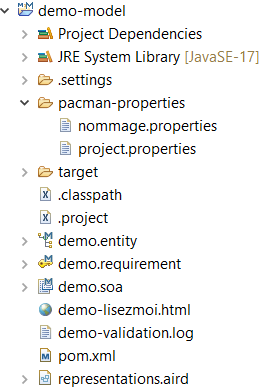
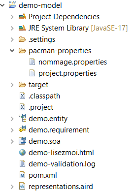

➤ Le projet "demo" comme précité n'a que pour seul et unique but de servir de projet parent pour l'ensemble des autres projets Maven. Il a donc uniquement un fichier pom.xml auquel se réfèrent tous les autres pom.xml des projets fils. Il s'agit ici d'une structure tout à fait classique pour un projet multi-modules Maven. Le fichier "pom.xml" ne demande pas d'explications particulières, il se contente juste de gérer les versions des différentes dépendances qui sont utilisées dans les autres modules. Il servira par ailleurs pour le packaging et le déploiement de l'application.
➤ Le projet "demo-domain" qui porte l'ensemble de la couche métier contient par défaut toutes les classes de haut niveau pour son bon fonctionnement.
Il s'agit :
- Des classes d'exception métier au niveau du package [package racine].domain.exceptions Si besoin, placer ici toutes les nouvelles exceptions fonctionnelles dont la couche métier a besoin dans le cadre de l'application.
- Des classes pour le fonctionnement des futures règles de gestion au niveau du package [package racine].domain.services.requirements
-
Des différentes annotations dont à besoin la couche métier pour pouvoir converser avec l'infrastructure. En effet, ne pas oublier que la couche métier doit être totalement indépendante de toute technique. Il est donc impossible d'utiliser directement des annotations de type Spring au niveau de ce projet sous peine de créer une dépendance avec l'infrastructure. Il est donc nécessaire de créer des annotations spécifiques à l'application générée, ces annotations sont par la suite prises en compte par le framework Spring au niveau de la couche d'infrastructure.
Ces annotations sont les suivantes :
- AdapterService : identifie auprès de Spring les classes qui vont servir d'adaptateur (implémentation) pour les différents services.
- DomainService: identifie auprès de Spring les classes qui font partie du domaine (couche métier).
- Requirement : identifie les règles de gestion pour les générateurs Pacman.
- StubService : identifie auprès de Spring les classes qui servent de bouchon pour les tests unitaires.
- Transactionnal : identifie auprès de Spring les méthodes (ou classes) qui doivent être jouées en mode transactionnel pour la couche de persistance.
Au niveau du fichier "pom.xml" il est encore une fois à rappeler que la couche métier ne doit contenir aucune dépendance avec toute couche technique, ce qui s'applique aux classes générées s'applique par conséquent aussi au dépendances présentes au niveau de ce fichier. Avec le plugin "maven enforcer", il est possible de définir les dépendances authorisées et celles qui seront exclues afin d'éviter qu'un développeur ajoute (et utilise) une dépendance qui a une adhérance à une quelconque couche technique. Certes cette solution n'exclue pas que le développeur paramètre différement le plugin (puisqu'il a lui aussi accès en modification au fichier maven), mais elle protège toutefois des erreurs d'inadvertance.
Ce plugin est paramétré par défaut avec le code suivant :
<configuration>
<rules>
<bannedDependencies>
<excludes>
<exclude>*</exclude>
</excludes>
<includes>
<!-- Placer ici les librairies authorisées. -->
<!-- Pour l'instant uniquement librairies de test. -->
<include>*:*:*:*:test</include>
<include>org.junit.jupiter:junit-jupiter</include>
<include>org.assertj:assertj-core</include>
<include>org.slf4j:slf4j-api</include>
</includes>
</bannedDependencies>
</rules>
</configuration>
On va donc inclure toutes les librairies de test et de log pour l 'instant (attention sl4j est une surcouche donc elle ne présuppose pas de l'implémentation technique qui est derrière), tous le reste est exclu. Pour les librairies de test, pareillement, le fait d'utiliser JUnit ne permet pas de connaitre quel est le framework utilisé par la suite pour le développement de l'application. On retouve donc uniquement les dépendances suivantes :
<dependency>
<groupId>org.slf4j</groupId>
<artifactId>slf4j-api</artifactId>
</dependency>
<dependency>
<groupId>org.junit.jupiter</groupId>
<artifactId>junit-jupiter</artifactId>
</dependency>
<dependency>
<groupId>org.assertj</groupId>
<artifactId>assertj-core</artifactId>
</dependency>
➤ Le projet "demo-model" qui contient la couche de modélisation avec principalement trois fichiers :
- [nom du projet].entity : le fichier de modélisation pour la couche de persitance.
- [nom du projet].soa : le fichier de modélisation pour l'ensemble des services.
- [nom du projet].requirement : le fichier de modélisation pour les règles de gestion.
Au niveau du répertoire /pacman-properties deux fichiers de paramètrage sont présents, il s'agit de la liste des options de configuration pour les générateurs Pacman. Le premier fichier nommage.properties permet de gérer la norme de nommage pour l'ensemble des classes qui vont être générées. Par défaut il s'agit d'un nommage de type "SUN". Il est possible de modifier cette convention de nommage en fonction des désidératas du développeur. Par exemple pour modifier le nom d'un paramètre entrant dans une méthode, il est possible de faire la modification suivante :
# Le nom d'un parametre IN classic
parameterMethodClassicIn = [CamelCase.LowerFirst/]
# Le nom d'un parametre IN classic
parameterMethodClassicIn = in_[CamelCase.LowerFirst/]
Le fichier project.properties quant à lui, contient toutes les autres options structurantes pour les générateurs. Ce fichier a été initialisé en partie à l'aide du formulaire de création de projet. Il est par la suite toujours possible de modifier les propriétés. Une des propriétés plus particulièrement peut être utile si des problématiques de génération sont rencontrées et pour vérifier si ces problématiques sont liées directement aux générateur :
# Flag indiquant si la generation pour le projet fonctionne en mode debug (non par defaut)
project.debug.enabled = false
Le fait de passer la propriété à la valeur "true" permet de ne pas lancer les opérations de post traitement que sont (entre autres) l'organisation automatique des imports et le formattage du code généré.
❗ Tout changement au niveau de ces fichiers est immédiatement pris en compte lors de la prochaine demande de génération.
Un fichier [nom de l'application]-validation.log vide est créé par défaut. Chaque demande de génération passe automatiquement par une pré-validation de la modélisation. Toutes les erreurs de modélisation rencontrées sont écrites dans ce fichier consultable à tout moment (si une erreur de modélisation est rencontrée, la génération est stoppée avec un message d'avertissement).
➤ Le projet "demo-server" qui contient l'ensemble de l'infrastructure (dans le cas de Pacman, couche infrastructure divisée en "infrastructure" et "application"). Comme pour le domaine, un certain nombre de classes de haut niveau sont générées dès la création du projet. On peut d'entrée voir le distinguo entre la couche "infrastructure" et la couche "application" avec les deux packages [package racine].infra et [package racine].app Pour rappel, la couche d'infrastructure contiendra l'ensemble des classes liées à la couche de persistance alors que la couche applicative contiendra l'ensemble des classes pour les services REST.
• [package racine] : contient la classe principale de démarrage pour l'application [nom de l'application]Bootsrap.java
•️ [package racine].app : package racine pour la couche applicative, contient (principalement) par défaut les classes de haut niveau pour le bon fonctionnement des services REST. Il s'agit des classes pour la gestion centralisée des exceptions et de la configuration de la sécurité.
• [package racine].app.exceptions : contient les exceptions de la couche applicative. Si besoin d'exceptions supplémentaires, les positionner à ce niveau.
• [package racine].app.adapters.controllers : package racine pour l'ensemble des service REST, contient par défaut le service pour l'api de santé de l'application.
• [package racine].infra : package racine pour la couche de persistance, contient par défaut les classes de haut niveau pour la gestion du transactionnel au niveau de la couche de persistance.
• /src/main/resources : contient le fichier de configuration SpringBoot pour l'application.
• /src/test/resources : contient le fichier de configuration SpringBoot pour les tests unitaires de l'application.
• [package racine] (niveau tests) : contient des classes utilitaires de haut niveau pour la gestion des tests unitaires JUnit.
Par défaut, relativement peu de code au niveau du fichier Maven (pom.xml), juste retenir que le projet à une dépendance vers la couche domaine ([nom de l'application]-domain) et que la classe de démarrage de l'application est enregistrée pour le futur packaging et déploiement de l'application :
<plugin>
<groupId>org.springframework.boot</groupId>
<artifactId>spring-boot-maven-plugin</artifactId>
<executions>
<execution>
<goals>
<goal>repackage</goal>
</goals>
</execution>
</executions>
<configuration>
<mainClass>fr.demo.DemoBootstrap</mainClass>
</configuration>
</plugin>
üìù Les fichiers de configuration Spring
application.properties
Le fichier permet de configurer le framework SpringBoot. Il contient un ensemble de propriété par défaut, il est possible d'en rajouter et évidemment de les modifier à loisir. Il a été divisé en plusieurs sections qui sont respectivement :
- Le paramétrage de l'api de santé.
- Le paramétrage pour la description open api des services REST (Swagger-ui).
- Le paramétrage de la sécurité pour la liste des URIs à ne pas sécuriser.
- Le paramétrage du serveur HTTP.
- Le paramétrage de la couche de log.
- La paramétrage pour le coffre fort.
- Le paramétrage des profils Spring.
- Le paramétrage du cache pour Spring.
- Le paramétrage du framework pour le circuit-breaker.
- Le paramétrage de la (ou les) datasource(s).
Il n'est pas pour objectif dans le cadre de ce document, de développer chaque paramètre dont certains sont par ailleurs suffisamment explicites mais plutôt de préciser certaines options qui ont été prises pour le paramétrage par défaut qui a été généré.
Api de santé
❗ Bien noter que par défaut, l'api de santé ne permet d'exposer que le "/health" et le "/info", par ailleurs on décide d'exclure explicitement mappings et headdump à l'aide des paramètres suivants (bien faire attention à l'exposition de ses points de terminaison):
# Activation des points de terminaison pour l'api de sante, par defaut, seuls '/health' et '/info' sont actifs.
management.endpoints.web.exposure.include=health,info
# Securite si demande d'activation de l'ensemble des points de terminaison.
management.endpoints.web.exposure.exclude=mappings,heapdump
Par défaut, l'api de santé a été paramétrée pour être consultable sur l'URL suivante : http://localhost:8080/actuator/health/ Cette URL donne uniquement le résultat suivant qui est le mode "par défaut" de l'actuator de SpringBoot :
{"status":"UP"}
Pour une application générée par Pacman, il a été rajouté un point de terminaison personnalisé pour l 'application (si désiré par les développeurs), il permet de surcharger le "/health" existant et d'ajouter toutes les informations supplémentaires. Ce point de terminaison est activable en jouant sur les valeurs des propriétés suivantes :
management.endpoint.health.show-details=always
management.health.demo_health.enabled=true
Après redémarrage du serveur, l'affichage devient alors (sur la même URL) :
{"status":"UNKNOWN","components":{"demoHealthImpl":{"status":"UNKNOWN","details":{"version":"0.0.0","latency":"0ms"}}}}
Cette affichage est rendu par la classe spécifique de l'application [nom de l'application]HealthImpl située au niveau du package [package racine].app.adapters.controllers. Modifier cette classe pour ajouter les données nécessaires.
Pareillement, pour ajouter des informations au niveau de l'URL "/info" compléter cette fois le fichier de configuration au niveau de la rubrique ((rubrique Configuration du point de terminaison /info et si besoin, se reporter à la documentation générale de l'actuator pour plus de précisions) :
# Configuration du point de terminaison /info, definir ici les informations necessaires.
management.info.env.enabled=true
app.cusomInfo=Une information de type custom...
info.app.cusomInfo=${app.cusomInfo}
info.app.java-version=${java.version}
info.app.java-vendor=${java.vendor}
info.app.excluded-actuator-enpoints=${management.endpoints.web.exposure.exclude}
❗ Il est à noter que tous les caractères accentués ont été supprimés des lignes de commentaires, ceci est volontaire car malgré tous les demande de forçage en UTF-8, il est toujours possible selon le paramétrage des plateformes que le fichier reste codé en ISO-8859-1. Comme il n'a pas été (pour l'instant) jugé utile de passer le fichier en yaml (car moins lisible), cette solution est celle qui a semblé être la moins coûteuse. Libre au développeurs de l'application cible de convertir le fichier .properties en fichier .yaml si désiré.
Open Api
OpenAPI est une spécification standardisée pour décrire, documenter et consommer des API RESTful. Elle permet de définir de manière structurée les endpoints, les méthodes HTTP, les paramètres d'entrée, les réponses, et les modèles de données associés. OpenAPI facilite l'interopérabilité entre services, la génération automatique de documentation interactive, ainsi que le développement et les tests d'API en offrant un format lisible par machine (généralement en JSON ou YAML).
Il est ici possible (entre autres), de définir l'URI pour l'interface de visualisation et d'interrogation de l'API développée. Le fichier JSON généré sera par défaut sous "/api-docs".
# Documentation JSON ex: http://localhost:8080/v1/api-docs
springdoc.api-docs.path=/api-docs
# Documentation Swagger (ihm) ex: http://localhost:8080/swagger-ui.html
springdoc.swagger-ui.path=/swagger-ui
# Definition de l'ordre d'affichage des operations (endpoints) <alpha|method>
springdoc.swagger-ui.operations-sorter=method
# Definition de l'ordre d'affichage des tags <alpha|fonction de tri JS personnalisee>
springdoc.swagger-ui.tags-sorter=alpha
URIs
❗ Il est particulièrement important en fonction des diverses modifications apportées au niveau des différentes rubriques, de modifier aussi la liste des URIs qui ne sont pas à sécuriser. Par défaut la sécurité au niveau de l'accès des services REST est automatiquement enclanchée (il n'y a pas de possibilité de l'activer ou de la désactiver à l'aide d'un paramètre, elle est enclanchée dès que SpringBoot détecte qu'elle est chargée et disponible au niveau des dépendance Maven). Cette liste est récupérée par le gestionnaire de sécurité généré par pacman et permet de sortir ces URIs de la zone de sécurité. Dans le cas contraire on aura un HTTP:401 sur les URIs suivantes :
- http://localhost:8080/actuator/health
- http://localhost:8080/actuator/info
- http://localhost/swagger-ui
- http://localhost/api-docs
# Ne pas oublier de reporter les modifications issues des rubriques precedentes
security.whitelist.paths=/swagger-ui/**,/api-docs/**,/actuator/**
Serveur HTTP
# Un exemple de cle symetrique (pour le developpement uniquement).
security.jwt.secret=HhO7b9aZ0e6eXEkQcL4BFxkGXGcWyN7F
Outre la définition du port et du contexte, une clé symétrique est automatiquement mide à disposition pour la classe de gestion de la sécurité des services REST lors du développement (à supprimer en production).
Elle est utilisée dans le cadre de la modélisation et de la génération automatique d'une sécurité de type Http ou ApiKey. Grâce à la mise à disposition de cette clé, il n'y a rien à faire (hormis le paramétrage du jeton JWT attendu) pour la mise en place de ce type de sécurité.
Logging
La configuration pour les fichiers de log :
logging.level.root=INFO
logging.level.org.springframework.web=DEBUG
logging.level.com.example=DEBUG
# Format du log
logging.pattern.console=%d{yyyy-MM-dd HH:mm:ss} - %logger{36} - %msg%n
# Fichier de log
logging.file.name=logs/demo.log
logging.file.max-size=10MB
logging.file.total-size-cap=100MB
Les profils
Par défaut c'est le profil de développement qui est activé pour Spring :
spring.profiles.active=dev
L'utilisation de ce profil permet nottament dans le cadre des tests unitaires pour la couche de persistance, de désactiver l'initialisation des champs automatiques (champs supplémentaires communs à l'ensemble des tables de la base de données) afin d'effectuer cette initialisation avec des valeurs spécifiquement fournies par le développeur du projet.
Cache
Cette propriété agit sur l’implémentation du cache utilisée par Spring Boot lorsqu’on utilise l’annotation @Cacheable, @CachePut, @CacheEvict, etc. Par défaut, elle utilise un cache en mémoire très basique (ConcurrentHashMap).
Dans la configuration actuelle, bon pour des tests ou des petits projets.
spring.cache.type=simple
Circuit-breaker
Grâce au framework Resilience4J, Pacman met à disposition un mécanisme de protection qui interrompt temporairement les appels vers un service externe lorsqu’un certain seuil d’échecs est atteint. Le paramétrage est donc mis à disposition dans le fichier "application.properties".
resilience4j.circuitbreaker.instances.externalServiceCircuitBreaker.registerHealthIndicator=true
resilience4j.circuitbreaker.instances.externalServiceCircuitBreaker.failureRateThreshold=50
resilience4j.circuitbreaker.instances.externalServiceCircuitBreaker.waitDurationInOpenState=10000ms
resilience4j.circuitbreaker.instances.externalServiceCircuitBreaker.permittedNumberOfCallsInHalfOpenState=3
resilience4j.circuitbreaker.instances.externalServiceCircuitBreaker.slidingWindowSize=10
Coffre fort
Un coffre-fort est un système sécurisé permettant de stocker et de protéger des informations sensibles, telles que des mots de passe, des clés d’API, des certificats ou des secrets d’application. Contrairement à un simple fichier chiffré, un coffre-fort offre généralement des fonctionnalités avancées comme le contrôle d’accès, l’audit des accès, le versionnement des secrets et le chiffrement automatique des données au repos et en transit. Dans le cas de Pacman c'est la solution "spring-cloud-vault" qui a été choisie.
❗ Par défaut le coffre-fort est désactivé.
# Activation ou désactivation du coffre fort.
spring.cloud.vault.enabled=false
# L'application échoue au démarrage si Vault est inaccessible.
spring.cloud.vault.fail-fast=false
# URL de Vault (par défaut : http://localhost:8200).
spring.cloud.vault.uri=http://localhost:8200
# Méthode d'authentification <token|approle|userpass|etc...>
spring.cloud.vault.authentication=token
# Le token d'accès Vault (à ne pas utiliser en dur en production !)
spring.cloud.vault.token=s.yourVaultToken
# Backend utilisé (kv v2 par défaut)
spring.cloud.vault.kv.enabled=true
# Nom du backend utilisé dans Vault (par défaut souvent secret).
spring.cloud.vault.kv.backend=secret
# Nom utilisé pour accéder au chemin dans Vault (ex. secret/data/myapp).
spring.cloud.vault.kv.application-name=demo
Datasources
Par défaut la datasource pour la base H2 est toujours paramétrée pour les tests unitaires :
# H2 DB
spring.datasource.url=jdbc:h2:file:C:/h2/test;DB_CLOSE_DELAY=-1;INIT=CREATE SCHEMA IF NOT EXISTS SCH;
spring.datasource.username=sa
spring.datasource.password=
spring.jpa.database-platform=org.hibernate.dialect.H2Dialect
Par ailleurs, on peut voir ici, la présence de la ligne "INIT=CREATE SCHEMA IF NOT EXISTS SCH;" Ceci est lié au fait qu'une demande de création de schéma a été effectuée lors de la création du projet "demo" (pour rappel le schéma "SCH"). En fait, même si la demande de création de schéma est effectué au niveau des scripts SQL qui sont générés à partir de la modélisation, il reste des problématiques au niveau des tests unitaires et/ou lors de la demande de création hors script (voir par la suite). Cette ligne permet donc de s'assurer dans tous les cas que le schéma est bien créé avant la demande de création et d'interrogation des tables.
# En production placer a 'none'. valeurs possibles : <create | create-drop | update | validate | none>
spring.jpa.hibernate.ddl-auto=create-drop
Pour le développement, il a été jugé bon (encore une fois par défaut, modifier de suite si nécessaire) de laisser la création de la base de données à la charge de SpringData (sans passer par les scripts SQL générés), en lisant l'ensemble des annotations au niveau des entités. A chaque démarrage la base est ainsi recréée et cela permet de vérifier rapidement si les relations entre les entités sont bien celles attendues (peut être utile tout au moins le temps de la modélisation).
❗ Par contre bien faire attention à la valeur de cette donnée et bien se souvenir, si l'option est laissée à "create-drop" lors du développement que d'une part, la base est supprimée à chaque démarrage du serveur et que d'autre part le script sql de création n'est pas utilisé.
# Fortement conseille de placer a 'false' (LazyInitializationException).
spring.jpa.open-in-view=false
La propriété essentielle pour la couche de persistance ! Pacman est un ensemble de générateurs destinés à la création de services REST. La notion de "LAZYLOADING" devrait donc être totalement absente dans les applications qui sont générées (hormis cas particuliers par la suite). Par ailleurs, le chargement par défaut pour les relations est toujours effectué en "EAGER" (sauf demande expresse au niveau de la modélisation). Il est donc totalement inutile et (à notre sens) deconseillé de positionner ce paramètre avec la valeur "true", ce qui laisserait ouverte la session JPA jusqu'a la couche applicative. La session devrait à priori être toujours fermée dès la requête initiale a été effectuée.
tests.properties
Ce fichier permet de configurer le framework SpringBoot pour le déroulement des tests d'intégration pour l'ensemble de la couche d'infrastructure. A ce niveau, il s'agit juste de configurer une datasource, le paramétrage n'implique à priori pas de commentaire particulier hormis le fait que le paramètre "spring.jpa.defer-datasource-initialization" est commenté puisque la demande de création de la base de données n'est plus gérée par le cycle de vie de Spring mais est expressement demandée par programmation. Le paramètre est toutefois conservé pour mémoire.
## Base H2 embarquee par defaut.
spring.datasource.url = jdbc:h2:mem:testdemo;DB_CLOSE_DELAY=-1
spring.jpa.properties.hibernate.dialect = org.hibernate.dialect.H2Dialect
# Attendre la creation des tables avant d'executer les scripts d'initialisation sql.
# spring.jpa.defer-datasource-initialization=true
# Autres proprietes
spring.jpa.hibernate.ddl-auto=none
spring.jpa.hibernate.naming.implicit-strategy=org.hibernate.boot.model.naming.ImplicitNamingStrategyLegacyJpaImpl
spring.jpa.hibernate.naming.physical-strategy=org.hibernate.boot.model.naming.PhysicalNamingStrategyStandardImpl
spring.jpa.hibernate.naming-strategy=org.hibernate.cfg.ImprovedNamingStrategy
spring.jpa.properties.hibernate.format_sql=true
spring.sql.init.mode=always
# Debug des requetes sql pour le developpement.
logging.level.org.hibernate.SQL=DEBUG
logging.level.org.hibernate.type.descriptor.sql.BasicBinder=TRACE
logging.level.org.hibernate.orm.jdbc.bind=TRACE
üõ¢Ô∏è G√©n√©ration de la couche de persistance
Dans un premier temps l'objectif ici (et dans le cadre des deux prochains chapitres de premier niveau) n'est pas d'entrer dans toutes les subtilités de la modélisation et/ou de la génération associée mais de comprendre avec une première modélisation très simple, l'ensemble du fonctionnement et de voir les différentes classes générées par Pacman dans le cadre de l'architecture hexagonale.
A ce niveau il n'aura donc qu'une seule entité afin d'éviter de polluer la compréhension générale par une modélisation plus complexe.
Modélisation
Comme précité la modélisation sera à ce niveau très simple, gestion d'une personne avec un nom, un prénom et un âge.... La modélisation ressemble donc à ceci (dans un namespace appelé arbitrairement "referentiel") :

Le paramétrage pour l'attribut nom :

Le paramétrage pour l'attribut prénom :

Le paramétrage pour l'attribut âge :

Génération
Dans l'explorateur de modèles, aller au niveau du projet de modélisation [nom de l'application]-model, se positionner sur le fichier de modélisation des entités [nom de l'application].entity et par un clique droit, faire apparaitre le menu de génération Pacman. Sont présentés (à l'inverse des versions précedentes) uniquement les générateurs associés au type du fichier sur lequel le développeur s'est positionné.
On peut remarquer la présence d'un générateur "Validation du diagramme de modélisation". Quelle que soit la couche à générer, il est toujours possible de lancer directement le générateur désiré et celui-ci va automatiquement activer la validation du diagramme avant de se lancer. Si des erreurs sont detectées, il est alors possible d'aller voir le résultat de la validation au niveau du projet de modélisation, en ouvrant le fichier "[nom de l'application]-validation.log". Par ailleurs il est aussi possible de lancer spécifiquement la validation du modèle afin de vérifier par avance si tout est correct. Si la validation est lancée en "standalone", et que le diagramme est valide, alors un message spécifique est affiché au développeur :

Lancer successivement la génération des scripts SQL et de la couche de persistance...
Aucune classe n'a été générée au niveau de la couche métier ce qui est normal puisque l'entité appartient à la couche de persistance, la persistance étant gérée par l'infrastructure. Se reporter au niveau du projet serveur [nom de l'application]-server, les scripts de création, de suppression et d'initialisation de la base de données sont disponibles soit :
-
au niveau du répertoire /src/main/resources/sql pour les scripts de création et de suppression de la base de données (développement et production).
-
create_tables_demo_h2.sql
-
drop_tables_demo_h2.sql
-
au niveau du répertoire /scr/test/resources pour les les scripts de création et d'initialisation de la base de données (tests unitaires).
-
create_tables_demo_h2.sql
- init_tables_demo_h2.sql
Plusieurs remarques à ce stade :
• Tous les scripts sont toujours sous la forme "[create/drop/init]_tables_[nom de l'application]_[type de base]"
• Il existe autant de scripts que de bases de données déclarées au niveau du répertoire /src/main/resources/sql (pour les tests, seule la base H2 est utilisée)
• Le script de création H2 est aussi présent au niveau du répertoire /scr/test/resources car très légèrement différent de celui utilisé pour la production (déclaration des contraintes pour les tests unitaires qui passent au niveau de l'initialisation des données).
• On peux voir dans les scripts la présence des champs supplémentaires qui ont été demandés dans le cadre du projet "demo".
/******************************************************************/
/* Base de donnees: h2 */
/* Application: demo */
/* Date de creation: 07/05/2025 15:50:30 */ /******************************************************************/
/******************************************************************/
/* Schema: SCH */ /******************************************************************/
create schema SCH;
/******************************************************************/
/* Sequences */
/******************************************************************/
create sequence SCH.TBL_PERSONNE_SEQ start with 1;
/******************************************************************/
/* TABLE : SCH.TBL_PERSONNE */
/******************************************************************/
create table SCH.TBL_PERSONNE
(
/* PK de la table SCH.TBL_PERSONNE */
TBL_PERSONNE_ID NUMBER(19) not null,
NOM VARCHAR(100) not null,
PRENOM VARCHAR(100) not null,
AGE NUMBER(10),
XTOPSUP BOOLEAN not null DEFAULT 'false',
XDMAJ TIMESTAMP not null,
XUUID VARCHAR(36) not null,
constraint TBL_PERSONNE_PK1_1 primary key (TBL_PERSONNE_ID)
);
comment on column SCH.TBL_PERSONNE.TBL_PERSONNE_ID is 'Clé primaire pour la table SCH.TBL_PERSONNE';
comment on column SCH.TBL_PERSONNE.NOM is 'Le nom de la personne. Cette donnée est obligatoire';
comment on column SCH.TBL_PERSONNE.PRENOM is 'Le prénom pour la personne. Cette donnée est obligatoire';
comment on column SCH.TBL_PERSONNE.AGE is 'L''age pour la personne, cette donnée est optionnelle';
• Au niveau du script d'initialisation pour les tests il est à noter que l'identifiant est initialisé à 1000 et non à 1 comme pour la séquence au niveau du script de création. Comme le développeur peut ajouter autant d'insertions que désirées dans le script, cela évite d'avoir des collisions de clés primaires lors de l'exécution des tests, entre les tuples qui sont enregistrés par le script d'initialisation et les tuples enregistrés programmatiquement dans le cadre des tests par les classes automatiquement générées par Pacman.
insert into SCH.TBL_PERSONNE (TBL_PERSONNE_ID,NOM,PRENOM,AGE,XTOPSUP,XDMAJ,XUUID) values
(1000,'S','S',0,false,current_timestamp,'a81bc81b-dead-4e5d-abff-90865d1e13b1');
Au niveau des classes générées :
➤ [package racine].infra : présence d'une nouvelle classe [Nom de l'application]EntityAbs, cette classe est regénérée à chaque fois (possibilité de changement des données au niveau du fichier de configuration de Pacman). Elle contient et gère le cycle de vie des différents champs supplémentaires qui sont communs à l'ensemble des tables. Dans le cadre du projet "demo" comme il a été demandé de rajouter les champs "Xtopsup, Xdmaj et Xuuid" on les retrouve donc à ce niveau :
/** Indicateur de suppression logique. */
@Column(name = "xtopsup", nullable = false, length = 1)
protected Boolean xtopsup = false;
/** Date de mise à jour de la ligne. */
@Column(name = "xdmaj", nullable = false)
protected Instant xdmaj;
/** Identifiant unique universel. */
@Column(name = "xuuid", nullable = false, unique = true, updatable = false)
protected UUID xuuid;
❗ Il est à noter que cette classe est toujours générée, même en l'absence de champ supplémentaire.
➤ [package racine].infra.entities.[nom du namespace] : implémentation de la ou des entités, dans le cas du projet "demo", il s'agit de l'entité "PersonneEntityImpl". Ici le générateur se contente de rajouter l'ensemble des annotations de persistance, encore une fois comme un indicateur de suppression logique a été demandé (Xtopsup) il est géré automatiquement par Spring Data.
@Entity
@Table(name = "TBL_PERSONNE", schema = "SCH")
@SequenceGenerator(name = "PERSONNE_SEQUENCE", sequenceName = "SCH.TBL_PERSONNE_SEQ", allocationSize = 1)
@SQLDelete(sql = "UPDATE SCH.TBL_PERSONNE SET xtopsup = true WHERE TBL_PERSONNE_ID = ?")
@SQLRestriction("xtopsup = false")
public class PersonneEntityImpl extends DemoEntityAbs {}
L'identifiant de l'entité est automatiquement créé et est associé à la séquence par le générateur (séquence aussi créée et initialisée dans le script SQL) :
/** Id. */
@Id
@GeneratedValue(strategy = GenerationType.SEQUENCE, generator = "PERSONNE_SEQUENCE")
@Column(name = "TBL_PERSONNE_ID", nullable = false)
private Long personne_id;
Chaque attribut est annoté pour que Spring Data puisse faire la liaison avec la couche de persistance (il est aussi possible de modifier par modélisation le nom de la colonne afin qu'il soit différent de celui de l'attribut au niveau de la classe java (voir plus loin)):
/** Le nom de la personne. Cette donnée est obligatoire. */
// Start of user code aee37c30f5d091a495526f636a3527bb
// End of user code
@Column(name = "NOM", nullable = false)
private String nom;
/** Le prénom pour la personne. Cette donnée est obligatoire. */
// Start of user code 209f4226d4ca0e91af3607674c06a9bc
// End of user code
@Column(name = "PRENOM", nullable = false)
private String prenom;
/** L'age pour la personne, cette donnée est optionnelle. */
// Start of user code 7d637d275668ed6d41a9b97e6ad3a556
// End of user code
@Column(name = "AGE", nullable = true)
private Integer age;
Chaque entité possède toujours deux constructeurs, un sans paramètre et un second avec l'ensemble des paramètres ce qui peut être utile avec certains lambdas d'initialisation si on désire peupler la base de données non pas par script mais programmatiquement.
➤ [package racine].infra.entities.repositories.[nom du namespace] : création du repository dédié à l'entité, sous la forme [nom de l'entité]Repository. Il s'agit d'une interface vide (CRUD par défaut) pour les opérations basiques de récupération, sauvegarde, etc.... Lors de la génération, Pacman privilégie toujours l'utilisation d'un repository par rapport à celle de l'entity manager, car plus simple et plus lisible. Il reste juste au développeur de positionner ses requêtes JPQL au niveau de cette interface. Il est toutefois toujours possible pour le développeur de demander expressément l'utilisation de l'entity manager si besoin (voir plus loin).
public interface PersonneRepository extends JpaRepository<PersonneEntityImpl, Long> {
// Start of user code f0e770b82a09fdf18b21d0a4b108eef5
// End of user code
}
Exemple de requete JPQL :
public interface PersonneRepository extends JpaRepository<PersonneEntityImpl, Long> {
@Query("SELECT u FROM SCH.TBL_PERSONNE u WHERE u.active = true AND u.email LIKE %:emailPart%")
List<User> findActiveUsersByEmailContaining(@Param("emailPart") String emailPart);
}
Tests
➤ [package racine].infra.adapters.[nom du namespace] : Des tests unitaires JUnit sont générés par défaut au niveau du package de test, avec pour chaque entité, une classe [nom de l'entité]RepositoryTestImpl, dans le cadre de l'application "demo", il s"agit de la classe PersonneRepositoryTestImpl. Ces tests de base auto générés permettent de vérifier le bon fonctionnement des opérations CRUD pour la base de données.
Chaque classe de test récupère le "Repository" par le biais d'une injection par constucteur, on active le profil Spring pour les tests et on demande expressement la configuration issue de "test.properties" au lieu de celle de production "application.properties". Enfin on demande l'initialisation de la base de donnée avec la ligne "initSql(dataSource);" :
@SpringBootTest
@ActiveProfiles("test")
@ExtendWith(SpringExtension.class)
@TestInstance(Lifecycle.PER_CLASS)
@TestPropertySource(locations = "classpath:tests.properties")
public class PersonneRepositoryTestImpl extends DemoTestAbs {
/** Couche de persistance. */
private final PersonneRepository personneRepository;
/**
* Constructeur avec injection de la couche de persistance.
*
* @param personneRepository Le repository pour l'entité.
* @param dataSource La source de données à utiliser pour les tests.
* @param entityManager L'EntityManager utilisé pour manipuler la base de
* données.
*/
@Autowired
PersonneRepositoryTestImpl(final PersonneRepository personneRepository, final DataSource
dataSource, final EntityManager entityManager) {
this.personneRepository = personneRepository;
this.entityManager = entityManager;
initSql(dataSource);
}
etc...
}
❗ La demande expresse d'initialisation a été générée suite au constat d'effets de bord si on laissait Spring initialiser la base avec son propre cycle de vie.
Voici un exemple de test unitaire pour la persistance :
/**
* Vérifie que l'entité personne est correctement récupérée par son identifiant.
*
* @throws Exception Si une exception se produit pendant l'exécution du test.
*/
@Test
public void testFindById() throws Exception {
Optional<PersonneEntityImpl> personne = personneRepository.findById(crudId);
assertTrue(!personne.isEmpty(), "Aucune entité n'a ete recupérée");
assertTrue(personne.get().getPersonne_id() == crudId, "L'entité recupérée n'est pas la bonne entité");
// Start of user code 6ace50c02167250b08e7a5ea0d5e8720
// End of user code
}
❗ Avant de lancer les tests, ne pas oublier de demander (si cela n'a pas déjà été effectué au préalable) la génération des scripts SQL. Pour ce faire, se positionner au niveau du fichier de modélisation de la couche de persistance [nom de l'application].entity et par clique droit, demander la génération :
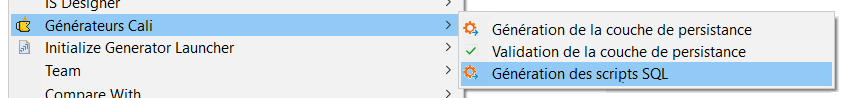
Un clique droit "Run As/Junit Test" sur la classe doit renvoyer le résultat suivant :

üìè G√©n√©ration des r√®gles de gestion
Il est possible de modéliser un ensemble de règles de gestion afin de générer des méthodes dont le corps doit par la suite être implémenté par les développeurs. Ces règles peuvent être fonctionnelles ou techniques, elles peuvent être hiérarchisées en catégories et sous-catégories, elles sont versionnées, etc...
Les règles de gestion sont toutes centralisées au niveau du domaine (couche métier) puisqu'il s'agit par excellence d'une partie du code métier. Ces règles seront par la suite appelées au niveau de l'implémentation du service métier qui a été modélisé dans le diagrame SOA.
❗ Ne pas confondre règles de gestion et règles de calcul métier, ici les règles devraient êtres considérées comme des règles ou le seul retour possible est un booléen, ou ce que l'on teste est valide ou n'est pas valide.
Dans le cadre de l'application "demo", avec les informations dont on dispose, une règle très simple va être modélisée, vérifier que la personne est majeure.
Modélisation
Se positionner au niveau de fichier de modélisation des "Requirements" : [nom de l'application].requirements et ajouter la règle (encore une fois, dans le cadre de ce document l'objectif n'est pas de montrer en détail l'utilisation du modeleur) :
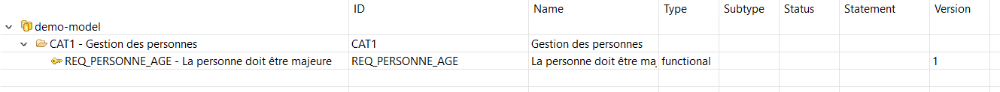
Puis se reporter au niveau du diagramme SOA pour attacher la règle de gestion au niveau de l'opération, grâce à la vue "Linked Requirements".
Une fois que la règle de gestion a été attachée à une opération, une clé jaune apparait alors au niveau de cette dernière afin de confirmer que l'opération à bien une ou plusieurs règles de gestion qui lui sont raccordées :

Génération
Pour lancer la génération des règles de gestions, utiliser en premier le générateur disponible au niveau du fichier de modélisation pour les "Requirements", en l'occurence le fichier [nom de l'application].requirements

Pour l'instant, seule l'énumération contenant l'ensemble des règles de gestion est mise à jour au niveau du projet contenant les informations du domaine ([nom de l'application]-domain. Pour rappel cette énumération est située au niveau du package [package racine].services.requirements
/**
* La personne doit être majeure
* RequirementVersionTest#testVersion_REQ_PERSONNE_AGE()
*/
REQ_PERSONNE_AGE("La personne doit etre majeure", "1");
Pour pouvoir utiliser cette nouvelle règle de gestion, il est maintenant nécessaire de passer à la génération de la couche de service avec le chapitre suivant.
üåê G√©n√©ration de la couche de service
C'est ici qu'est effectuée la plus grosse partie du travail de génération et que l'ensemble de la modélisation va permettre d'articuler le code autour de l'architecture hexagonale.
Modélisation
La modélisation des objets métier (DTO) est effectuée au niveau du fichier de modélisation ([nom de l'application].soa). Le plus simple (méthode conseillée lors de la première modélisation) est de sélectionner au niveau de la palette d'outils "Namespace from Entity Namespace" et de cocher l'ensemble des composants.
Dans le cas de l'application "demo", le diagramme (encore une fois très simple) ressemble à ceci :

Pareillement, deux opérations de type CRUD sont modélisées, une pour retourner une personne en fonction de l'identifiant et une pour retourner l'ensemble des personnes présentes dans la base de données. Encore une fois il s'agit pour l'instant, de se focaliser sur la manière dont Pacman génère les différentes classes et les articule en fonction de l'architecture hexagonale, plutôt que de faire de suite un exemple plus complexe. Il n'est pas non plus dans l'objectif de ce chapître de détailler toutes les possibilités de modélisation.
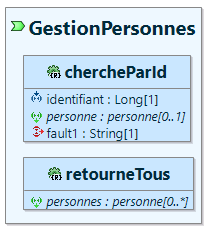
Dans cet exemple :
- La version de l'application est laissé à la version par défaut soit 0.0.1
- L'uri racine est positionnée sur "/api".
- L'uri pour le service est "/personnes".
- L'uri pour la recherche par identifiant est "/{id}"
- Le service n'est pas sécurisé (accès libre).
- Dans le cas ou la personne n'est pas trouvée, une "fault" a été modélisée avec comme code de retour 404 (il est aussi possible de modéliser un 204).
Génération
Dans l'explorateur de modèles, aller au niveau du projet de modélisation [nom de l'application]-model, se positionner sur le fichier de modélisation des entités [nom de l'application].soa et par un clique droit, faire apparaitre le menu de génération Pacman (Générateurs Cali).
Au niveau du projet du domaine (couche métier) :
• [package racine].domain.entities : Comme pour la couche de persistance, une classe parent est automatiquement générée pour les objets métiers. A l'inverse de la classe générée pour les entités, celle-ci ne contient aucune annotation et méthode pour gérer le cycle de vie des champs automatiques. Elle sert juste de conteneur pour mettre à disposition les différents attributs au niveau du DTO.
• [package racine].domain.entities.[nom du namespace] : Contient les implémentations des objets métier (le DTO) avec pour chaque objet une classe de type [nom du dto]DToImpl (ici PersonneDtoImpl). En plus des attributs et de leurs assesseurs, chaque objet métier généré contient automatiquement :
- Une méthode de validation pour les champs obligatoires ainsi que pour les champs qui ont des règles spécifiques issues de la modélisation (taille, pattern).
public PersonneDtoImpl validate() throws DemoValidationException {
List<String> errors = new ArrayList<>();
ValidatorUtils.checkMandatory("nom", nom, errors);
ValidatorUtils.checkSize("nom", nom, 10, 30, errors);
ValidatorUtils.checkMandatory("prenom", prenom, errors);
if (!errors.isEmpty()) {
throw new DemoValidationException(this, errors.toArray(new String[errors.size()]));
}
return this;
}
- Une redéfinition de la méthode "equals()"
@Override
public boolean equals(Object obj) {
if (this == obj) {
return true;
}
if (!(obj instanceof PersonneDtoImpl)) {
return false;
}
PersonneDtoImpl personne = (PersonneDtoImpl) obj;
return Objects.equals(this.personne_id, personne_id)
&& Objects.equals(this.nom, personne.nom) && Objects.equals(this.prenom, personne.prenom)
&& Objects.equals(this.age, personne.age)
&& Objects.equals(this.xtopsup, personne.xtopsup) && Objects.equals(this.xdmaj, personne.xdmaj)
&& Objects.equals(this.xuuid, personne.xuuid);
}
- Une redéfinition de la méthode "hashCode()"
@Override
public int hashCode() {
return Objects.hash(this.personne_id, this.nom, this.prenom, this.age, this.xtopsup, this.xdmaj, this.xuuid);
}
- Une redéfinition de la méthode "toString()"
@Override
public String toString() {
return "PersonneDtoImpl { personne_id = " + this.personne_id
+ "nom = " + this.nom + "prenom = " + this.prenom + "age = " + this.age
+ "xtopsup = " + this.xtopsup + "xdmaj = " + this.xdmaj + "xuuid = " + this.xuuid + "}";
}
• [package racine].domain.port.adapters.[nom du namespace] : Contient les interfaces (ports) pour les services d'infrastructure (couche de persistance), avec pour chaque service modélisé une interface d'accès à l'implémentation (adapter). Il s'agit donc de l'accès au "inbounds", toutes les interfaces sont de type [nom du DTO]Provider.
❗ On parle ici de "Provider" car on considère que, pour la couche métier, l'accès à la couche de persistance est un service fourni. Par ailleurs à ce niveau le domaine n'a pas à savoir si la donnée provient d'une base de données, d'un fournisseur de mail, d'un fournisseur de services REST, etc... Cet accès est transparent à ce niveau, le métier sait uniquement qu'il peut récupérer des informations concernant l'entité qu'il est censé gérer, peut importe comment ces informations sont récupérées.
On reprend ici l'ensemble des opérations modélisées au niveau du diagramme SOA.
/**
* Service de gestion des personnes.
*
* @Author j.dupont
*/
public interface GestionPersonnesProvider {
/**
* Cette méthode retourne la personne qui correspond à l'identifiant passé en
* paramètre.
*
* @param identifiant : L'identifiant pour la personne.
*
* @return Optional<PersonneDtoImpl> : La personne.
*/
public Optional<PersonneDtoImpl> chercheParId(final Long identifiant);
/**
* Retourne la liste des personnes présentes en base.
*
*
* @return List<PersonneDtoImpl> : La liste de toutes les personnes présentes en base.
*/
public List<PersonneDtoImpl> retourneTous();
}
• [package racine].domain.port.adapters.features.[nom du namespace] : Contient les interfaces (ports) pour l'appel des services métier par l'infrastructure, avec pour chaque service modélisé une interface d'accès à l'implémentation (adapter), ici le service REST. Il s'agit donc de l'accès au "outbounds", toutes les interfaces sont de type [nom du service]Service. Avec la version actuelle de Pacman, ces interfaces on exactement le même code que l'interface pour l'accès au "Provider" de la couche de persistance (99% des cas d'utilisation).
• [package racine].domain.services.[nom du namespace] : Contient les implémentations des services métier (qui implémentent l'interface vue juste ci-dessus), avec pour chaque implémentation un service nommé [nom du service]ServiceImpl.
/**
* Service de gestion des personnes.
*
* @Author j.dupont
*/
// Start of user code 4a236703b9d5317c198dc3e3d6db3fc6
@SuppressWarnings("unused")
// End of user code
@DomainService
public class GestionPersonnesServiceImpl implements GestionPersonnesService {
/** Règles de gestion associées. */
private final GestionPersonnesRequirementImpl requirements = new GestionPersonnesRequirementImpl();
/** Le logger pour la classe. */
private static final Logger LOG = LoggerFactory.getLogger(GestionPersonnesServiceImpl.class);
/** Interface de persistance. */
private final GestionPersonnesProvider gestionPersonnesProvider;
// Start of user code 2234954db9958848e5c5f1c19fe4a482
// End of user code
/**
* Constructeur avec injection de la persistance.
*/
public GestionPersonnesServiceImpl(final GestionPersonnesProvider gestionPersonnesProvider) {
this.gestionPersonnesProvider = gestionPersonnesProvider;
}
/**
* Cette méthode retourne la personne qui correspond à l'identifiant passé en
* paramètre.
*
* @param identifiant : L'identifiant pour la personne.
*
* @return Optional<PersonneDtoImpl> : La personne.
*/
// Start of user code ea90c22bb8cac819a5c286613bb46870
// End of user code
@Override
public Optional<PersonneDtoImpl> chercheParId(final Long identifiant) {
// Appel des exigences en provenance de la modélisation
// Start of user code 1804fe669db8e4489d6be56c814e9b1d
// End of user code
Optional<PersonneDtoImpl> personne = this.gestionPersonnesProvider.chercheParId(identifiant);
// Start of user code 1f02d896fb99cca181e0d94fc20b42f2
// End of user code
return personne;
}
/**
* Retourne la liste des personnes présentes en base.
*
*
* @return List<PersonneDtoImpl> : La liste des personnes présentes en base.
*/
// Start of user code 0cef7902fd0827c082758b681c5b9e44
// End of user code
@Override
public List<PersonneDtoImpl> retourneTous() {
// Appel des exigences en provenance de la modélisation
// Start of user code b3cd801bacaa8215ea8b99cd493f3c64
// End of user code
List<PersonneDtoImpl> personnes = this.gestionPersonnesProvider.retourneTous();
// Start of user code fc7467f7f1fb6f5cccd57590429003e4
// End of user code
return personnes;
}
}
Il s'agit de la classe "centrale" pour la manipulation des objets de l'application, afin d'être prise en compte par Spring, la classe est annoté "@DomainService":
- Par le bais de son interface "GestionPersonnesService", ce service est appelable par le service REST de l'infrastructure.
- Par le biais de l'interface "GestionPersonnesProvider" (et l'injection dans le constructeur de son implémentation), ce service est capable d'appeler l'infrastructure pour avoir accès à la couche de persistance. Comme l'implémentation du fournisseur de persistance est au niveau de l'infrastructure, mais que son interface est définie au niveau du domaine, le domaine n'a pas à connaitre l'infrastructure et n'a donc aucune dépendance Maven sur le projet [nom de l'application]-server
Par ailleurs, une classe [nom du service]RequirementsImpl est aussi automatiquement générée (même si aucune règle de gestion n'a été préalablement modélisée, dans ce cas le corps est vide). Cette classe contient l'ensemble des règles qui ont été attachées au service. Comme dans le cas de l'application "demo" une règle concernant le contrôle de l'âge a été préalablement positionnée sur l'opération, le code généré par défaut pour cette classe est donc le suivant :
public class GestionPersonnesRequirementImpl {
/**
* La personne doit être majeure .
*/
@Requirement(RequirementsEnum.REQ_PERSONNE_AGE)
// Start of user code 1b38da379e5345c55bdffa8f819e2607
public void exigenceREQ_PERSONNE_AGE() {
throw new DemoNotImplementedException(
"La règle de gestion : La personne doit être majeure n'a pas été implémentée.");
}
// End of user code
// Start of user code 5b1f0e7b5b1a0ffc337957baef521227
// End of user code
}
C'est au développeur d'implémenter le code pour la règle de gestion (on peut par ailleurs constater que c'est la totalité de la méthode qui est positionnée entre balises de type "user code" car le générateur ne peut connaitre par avance les paramètres entrants et sortants pour la règle de gestion. Ainsi dans le cas (très simple) de la précédente modélisation l'implémentation pourrait être la suivante :
public boolean exigenceREQ_PERSONNE_AGE(final PersonneDtoImpl personne) {
return personne.getAge() >= 18;
}
Ou encore :
public void exigenceREQ_PERSONNE_AGE(final PersonneDtoImpl personne) {
if (personne.getAge() < 18) {
throw new RuntimeException("La personne doit avoir plus de 18 ans");
}
}
Pour intégrer la règle de gestion, c'est encore une fois au développeur de coder l'appel à l'emplacement désiré au sein de l'implémentation de son service (avant ou après l'appel selon la règle) et d'effectuer les actions nécessaires en fonction du retour de ladite règle.
Par exemple :
@Override
@Requirement(value = { RequirementsEnum.REQ_PERSONNE_AGE })
public PersonneDtoImpl chercheParId(final Long identifiant) {
// Appel des exigences en provenance de la modélisation
// requirements.exigenceREQ_PERSONNE_AGE();
// Start of user code 1804fe669db8e4489d6be56c814e9b1d
// End of user code
PersonneDtoImpl personne = this.gestionPersonnesProvider.chercheParId(identifiant);
// Start of user code 1f02d896fb99cca181e0d94fc20b42f2
// On lance diretement l'exception qui va effectuer un traitement particulier
// si la personne retournée n'est pas majeure
requirements.exigenceREQ_PERSONNE_AGE(personne);
// End of user code
return personne;
}
Ou encore :
// Start of user code 1f02d896fb99cca181e0d94fc20b42f2
if (!requirements.exigenceREQ_PERSONNE_AGE(personne)) {
// On ajoute un message indiquant que la personne retournée n'est pas majeure....
}
// End of user code
Voici donc un bref schéma récapitulatif qui permet de mieux appréhender l'ensemble de traitements lors de l'appel d'un service métier :
• [package racine].domain.port.adapters.stub.[nom du namespace] : Au niveau des tests unitaires, le domaine doit pouvoir fonctionner en totale autonomie (il ne s'agit pas ici de tests d'intégration mais bien de tests métier). Dans cette optique une classe bouchon (stub) [nom du service]StubImpl est automatiquement générée pour chaque entité afin de remplacer la couche de persistance. Par défaut, toutes les méthodes renvoient une "NotImplementedException". C'est au développeur d'implémenter son propre jeu de test.
@StubService
public class GestionPersonnesProviderStubImpl implements GestionPersonnesProvider {
/**
* Cette méthode retourne la personne qui correspond à l'identifiant passé en
* paramètre.
*
* @param identifiant : L'identifiant pour la personne.
*
* @return Optional<PersonneDtoImpl> : La personne.
*/
@Override
public Optional<PersonneDtoImpl> chercheParId(final Long identifiant) {
// Start of user code 3526af85e72642a68569bcae02d07e77
throw new DemoNotImplementedException(
"Le test n'a pas été implémenté pour le stub : GestionPersonnesServiceImpl");
// End of user code
}
etc...
}
❗ Le stub implémente toujours la même interface que l'implémentation de production, afin d'être pris en compte par Spring, il est annoté "@StubService".
• [package racine].domain.services.[nom du namespace] (TESTS) : Contient les classes Junit de test métier [nom du service]ServiceTestImpl pour les services. Chaque service bénéficie de sa propre classe de test. Non implémentée par défaut, c'est au développeur de réaliser le codage nécessaire pour effectuer l'ensemble de ses propres tests métier.
@ExtendWith(GestionPersonnesServiceParamResolver.class)
public class GestionPersonnesServiceTestImpl {
@Test
public void chercheParId(final GestionPersonnesServiceImpl gestionPersonnes) {
// Start of user code 3526af85e72642a68569bcae02d07e77
throw new DemoNotImplementedException(
"Le test n'a pas été implémenté pour le service : GestionPersonnesServiceImpl");
// End of user code
}
etc...
}
• [package racine].domain.services.resolvers.[nom du namespace] (TESTS) : Contient les classes de résolution [nom du service]ParamResolver pour les Stubs de chaque service dans le cadre des tests. Il s'agit d'une petite classe technique qui permet à JUnit d'injecter le Stub à la place du fournisseur initial ("Provider") de la couche d'accès à la persistance.
Au niveau du projet du serveur (couche infrastructure) :
C'est au niveau du projet infrastructure que se situe la plus grande partie du code généré. Vont être générés, les services REST, les services de persistance (pour la majorité un accès à la base de données) et les différentes couches techniques qui permettent la communication et le partage des objets métier entre les différentes couches (surplus de code inhérent à l'architecture hexagonale). Comme vu précédemment, il a été décidé pour plus de lisibilié, de séparer la couche "globale" infrastructure en deux : infrastructure et application.
• [package racine].infra.adapters.[nom du namespace] : Contient l'ensemble des classes pour l'implémentation des services de persistance. Chaque service métier bénéficie de son service de persistance [nom du service]JpaProviderImpl qui lui permet de coder ses accès à la base de données, grâce au "Repository" qui a été généré au niveau de la demande de génération de la couche de persistance (voir plus haut) et qui est automatiquement injectée dans le service. La classe est annotée "@AdapterService" pour être prise en compte par Spring.
@AdapterService
public class GestionPersonnesJpaProviderImpl implements GestionPersonnesProvider {
// Start of user code 2129864a49adcaa3a812f92be467bf4e
// End of user code
/** Gestionnaires de persistance disponibles. */
final PersonneRepository personneRepository;
/**
* Constructeur.
*/
@Autowired
public GestionPersonnesJpaProviderImpl(final PersonneRepository personneRepository) {
this.personneRepository = personneRepository;
// Start of user code 2e3e969fd52202f4f94ef7456a361c15
// End of user code
}
etc...
}
❗ A ce niveau dans l'application, il aurait été possible de simplement positionner une annotation "@Service" ou "@Component" puisque l'infrastructure est sous Spring mais il a été noté des effets de bord avec les couches de test, et de manière générale, il a été considéré comme plus homogène que l'ensemble des couches aient des annotations spécifiques projet, mais enregistrée auprès de Spring.
❗ Bien noter le commentaire "Gestionnaires..disponibles", en effet, par défaut Pacman va prendre le gestionnaire spécifiquement dédié à l'entité, mais si des relations avec d'autres entités sont trouvées, les gestionnaires de ces entités référencées sont alors eux aussi récupérés et mis à disposition.
Chaque implémentation d'opération modélisée est découpée en deux méthodes, la méthode d'accès, qui implémente celle de l'interface et qui est chargée des opérations de copie entre les objets, et la méthode d'invocation qui contient l'appel à la couche de persistance. Comme toujours (lorsque la modélisation ne permet pas d'effectuer la totalité de la génération), la méthode d'invocation renvoie toujours une exception de type "NotImplementedExcption".
/**
* Cette méthode retourne la personne qui correspond à l'identifiant passé en
* paramètre.
*
* @param identifiant : L'identifiant pour la personne.
*
* @return Optional<PersonneDtoImpl> : La personne.
*/
@Override
public Optional<PersonneDtoImpl> chercheParId(final Long identifiant) {
// Start of user code 3526af85e72642a68569bcae02d07e77
// End of user code
Optional<PersonneEntityImpl> entity = chercheParId_invoke(identifiant);
if (entity.isPresent()) {
return Optional.of(PersonneMapper.toDto(entity.get()));
}
return Optional.empty();
}
/**
* Cette méthode retourne la personne qui correspond à l'identifiant passé en
* paramètre.
*
* @param identifiant : L'identifiant pour la personne.
*
* @return Optional<PersonneDtoImpl> : La personne.
*/
private Optional<PersonneEntityImpl> chercheParId_invoke(final Long identifiant) {
// Start of user code 0d7aeafd27536987cf0cf491de14ca07
throw new DemoNotImplementedException("La méthode 'chercheParId' n'a pas été implémentée");
// End of user code
}
/**
* Retourne la liste des personnes présente en base.
*
*
* @return List<PersonneDtoImpl> : La liste des personnes présentes en base.
*/
@Override
public List<PersonneDtoImpl> retourneTous() {
// Start of user code 1f82841b68b9a27af5cfcf572412847c
// End of user code
return retourneTous_invoke().stream().map(o -> PersonneMapper.toDto(o)).collect(Collectors.toList());
}
/**
* Retourne la liste des personnes présentes en base.
*
*
* @return List<PersonneDtoImpl> : La liste des personnes présentes en base.
*/
private List<PersonneEntityImpl> retourneTous_invoke() {
// Start of user code ac726b97d06e0252fbb02a99667258b7
throw new DemoNotImplementedException("La méthode 'retourneTous' n'a pas été implémentée");
// End of user code
}
Dans le cas spécifique de l'application "demo" et selon la modélisation effectuée, il s'agit pour ces deux opérations de simples opérations de type CRUD, il est donc possible de réaliser très simplement l'implémentation suivante pour les deux méthodes d'invocation :
private Optional<PersonneEntityImpl> chercheParId_invoke(final Long identifiant) {
// Start of user code 0d7aeafd27536987cf0cf491de14ca07
return this.personneRepository.findById(identifiant);
// End of user code
}
private List<PersonneEntityImpl> retourneTous_invoke() {
// Start of user code ac726b97d06e0252fbb02a99667258b7
return this.personneRepository.findAll();
// End of user code
}
• [package racine].infra.entities.mappers.[nom du namespace] : Au niveau de l'implémentation de la couche de persistance [nom du service]JpaProviderImpl il a été possible de voir que la classe faisait appel à une méthode de mappeur (en locurence "PersonneMapper.toDto(o)"). Ce package contient l'ensemble des mappeurs qui permettent pour chaque entité, la recopie des données vers un objet métier et celle de l'objet métier vers l'entité. Ceci est effectué à l'aide des deux méthodes implémentées : "toDto(..)" et "toEntity()".
Chaque mappeur contient un code très simple qui permet cette copie, voici par exemple le code pour la création de l'objet métier, il s'agit du code le plus complet car la seule méthode à effectuer consiste à la recopie des champs automatiques (pour rappel, les champs automatiques ne redescendent pas et ne montent pas plus haut que la couche métier) :
public static PersonneDtoImpl toDto(final PersonneEntityImpl entity) {
if (null == entity) {
return null;
}
PersonneDtoImpl dto = new PersonneDtoImpl();
try {
dto.setPersonne_id(entity.getPersonne_id());
dto.setNom(entity.getNom());
dto.setPrenom(entity.getPrenom());
dto.setAge(entity.getAge());
dto.setXtopsup(entity.getXtopsup());
dto.setXdmaj(entity.getXdmaj());
dto.setXuuid(entity.getXuuid());
// Start of user code 856cc109a8cab6eb0a3676613acc6f8f
// End of user code
} catch (Exception e) {
throw new DemoMapperException("Impossible de mapper la classe : PersonneDtoImpl");
}
return dto;
}
• [package racine].app.adapters.controllers.[nom du namespace] : Contient les points d'entrée (sous forme de services REST dans le cas de Pacman) pour les différents service ("outbounds" au niveau de l'architecture REST). Chaque service [nom du service]ControllerImpl fait appel à l'interface en provenance du domaine [nom du service]Feature dont l'injection de l'implémentation est effectuée dans le constructeur par le framework Spring :
@Controller
@RequestMapping("/v0/api/personnes")
@Tag(name = "GestionPersonnes", description = "Service de gestion des personnes.")
// Start of user code 5279f4e79131b3bfeb4c9f26a960106d
// End of user code
class GestionPersonnesControllerImpl {
/**
* Interface service métier.
*/
private final GestionPersonnesService gestionPersonnes;
/**
* Constructeur.
*/
@Autowired
public GestionPersonnesControllerImpl(final GestionPersonnesService gestionPersonnes) {
this.gestionPersonnes = gestionPersonnes;
}
}
Le code est ici standard et ne mérite pas d'explication particulière. L'URI est ici branchée sur "/v0/api/personnes" selon les différents éléments de modélisation (pour la version on prend toujours uniquement le numéro majeur précédé de la lettre "v"). Au niveau des opérations modélisées, le générateur passe toujours par un monteur pour la réponse, ce qui permet à la fois d'avoir l'ensemble du code d'appel entièrement généré et de laisser la possibilité au développeur de rajouter des informations supplémentaires au niveau des balises de type "user code". La description Open Api est, elle aussi, automatiquement générée.
Pour la première opération de recherche par identifiant, comme il est possible de ne pas avoir d'enregistrement et que une "fault" a été modélisée, cela permet d'avoir un message personnalisé en cas d'erreur fonctionnelle.
❗ La documentation Open Api a été volontairement retirée du code généré afin de limiter le nombre de lignes et, dans un premier temps, se focaliser uniquement sur l'appel des différents services.
/**
* Cette méthode retourne la personne qui correspond à l'identifiant passé en
* paramètre.
*
* @param identifiant : L'identifiant pour la personne.
*
* @return Optional<PersonneDtoImpl> : La personne.
*/
// Start of user code ea90c22bb8cac819a5c286613bb46870
// End of user code
@GetMapping(value = "/{id}", produces = "application/json;charset=utf8")
public ResponseEntity<PersonneXtoImpl> chercheParId(@PathVariable(name = "id", required = true) Long identifiant) {
ResponseEntity.BodyBuilder responseBuilder = ResponseEntity.status(200);
// Start of user code 3526af85e72642a68569bcae02d07e77
// End of user code
return this.gestionPersonnes.chercheParId(identifiant).map(o -> responseBuilder.body(PersonneMapper.toXto(o)))
.orElseThrow(() -> new DemoNotFoundException(404, "La personne n'a pas été trouvée."));
}
/**
* Retourne la liste des personnes présentes en base.
*
*
* @return List<PersonneDtoImpl> : La liste des personnes présentes en base.
*/
// Start of user code 0cef7902fd0827c082758b681c5b9e44
// End of user code
@GetMapping(produces = "application/json;charset=utf8")
public ResponseEntity<List<PersonneXtoImpl>> retourneTous() {
ResponseEntity.BodyBuilder responseBuilder = ResponseEntity.status(200);
// Start of user code 1f82841b68b9a27af5cfcf572412847c
// End of user code
return responseBuilder.body(this.gestionPersonnes.retourneTous().stream().map(o -> PersonneMapper.toXto(o))
.collect(Collectors.toList()));
}
❗ Il est à remarquer que les objets métier ne sont jamais envoyés au client, il sont avant recopiés dans des objets sérialisés de type [nom du dto]XtoImpl.
• [package racine].app.entities.mappers.[nom du namespace] : Contient les mappeurs pour effectuer les conversions entre les objets métier et les objets serialisés. Le code est similaire à celui des mappeurs de la couche d'infrastructure.
• [package racine].app.entities.[nom du namespace] : Contient la liste des objets serialisés qui seront envoyés vers ou en provenance du client. A noter simplement qu'il est possible à ce niveau de positionner des annotations spécifiques JSON afin de masquer des champs, spécifier un nom particulier pour l'attribut, etc...
/** Le nom de la personne. Cette donnée est obligatoire. */
// Start of user code aee37c30f5d091a495526f636a3527bb
@JsonProperty("nom")
// End of user code
private String nom;
Tests
• [package racine].app.adapters.[nom du namespace] : Contient la liste des classes de test d'intégration pour chaque service REST. Chaque classe [nom du service]ServiceTestImpl permet de lancer le serveur et d'effectuer un appel REST avec des informations par défaut. Suite à la génération, on vérifie si le code de retour du service est bien celui attendu et le test est alors validé. Le développeur, à l'aide des balises de type "user code" peut toujours ajouter à sa guise autant d'éléménts que nécessaires pour complexifier ses propres cas de test.
A l'aide de l'annotation "@TestPropertySource" on demande à Spring de prendre le fichier de configuration "test.properties" au lieu de la configuration de production "application.properties", on demande le chargement et l'initialisation de la base de données. Toujours de la même manière, les différentes ressources sont injectées par le biais du constructeur.
@AutoConfigureMockMvc
@ExtendWith(SpringExtension.class)
@SpringBootTest(webEnvironment = SpringBootTest.WebEnvironment.MOCK)
@TestPropertySource(locations = "classpath:tests.properties")
public class GestionPersonnesServiceTestImpl extends DemoTestAbs {
/**
* Instance de {@link MockMvc} pour effectuer des requêtes HTTP simulées dans
* les tests.
*/
private MockMvc restHelper;
/**
* Instance de {@link GestionPersonnesProvider} qui est utilisée pour gérer les
* opérations de persistance au niveau des tests.
*/
@SuppressWarnings("unused") // Pour l'instant.
private GestionPersonnesProvider provider;
/**
* Instance de {@link ObjectMapper} utilisée pour gérer les opérations de
* conversion entre une entité et json.
*/
ObjectMapper objectMapper;
/**
* Constructeur.
*/
@Autowired
GestionPersonnesServiceTestImpl(final DataSource dataSource, final GestionPersonnesProvider provider,
final MockMvc restHelper, final ObjectMapper objectMapper) {
this.provider = provider;
this.objectMapper = objectMapper;
this.restHelper = restHelper;
initSql(dataSource);
}
etc...
}
A partir du moment ou la génération de la couche de service a été effectuée, il est possible (après avoir implémenté le code de la couche de persistance au niveau de la classe [nom du service]JpaProviderImpl) d'attaquer directement les tests d'intégration qui permettent de valider la globalité de la chaine.
❗ Il est important de noter que si les tests sont lancés alors que l'implémentation de la classe de persistance n'a pas encore été effectuée, les tests renvoient (au niveau JUnit) un retour positif mais le détail des tests est, quant à lui, négatif :

Cela est du à la présence par défaut de l'annotation "@Disabled("En attente de l'implémentation de la couche de persistance")" positionnée par défaut sur chaque test. Ne pas oublier d'enlever cette annotation une fois que les tests sont implémentés. A voir si cette annotation sera conservée dans le future, mais cela évite d'être en erreur sur un serveur d'intégration continue alors qu'en fait, la chaine est valide (sur 90% du code que l'on désire tester) hormis une simple problématique de récupération des donnnées non encore implémentée (ce qui en soit n'est pas considéré comme une erreur).
Cela est donc laissé au choix des développeurs qui peuvent, suite à la première génération, supprimer de suite cette annotation s'ils désirent que les tests soient en erreur.
Au niveau des tests, comme précisé ci-dessus et par défaut, le code généré pose juste la structure d'appel de base et vérifie simplement si le code de retour du service est bien celui attendu. Si cela est le cas, le test est alors considéré comme validé.
@Test
// Start of user code b9016888c594d13644084667286bfe9c
@Disabled("En attente de l'implémentation de la couche de persistance")
// End of user code
public void retourneTous() throws Exception {
// Start of user code bd802d7d3e35db7077c719c62b551092
// End of user code
/** Le statut attendu suite au test. */
int expectedStatus = 200;
restHelper.perform(get("/v0/api/personnes").contentType("application/json"))
// Start of user code 6446dd56a2bc98c406960c0c3f2f9d1a
// End of user code
.andExpect(status().is(expectedStatus));
}
❗ Dans le cas de recherche par identifiant, afin d'éviter une complexité technique au niveau des générateurs (à ce niveau il n'est plus possible (complexe) de distinguer la clé primaire pour l'objet métier), ce champ est donc initialisé à 0L comme tout champ de type "Long". Or pour rappel, au niveau des scripts d'initialisation la valeur de la clé primaire comment à 1000L pour éviter les collisions avec les éventuels ajouts de tuples par le développeur. Il ne faut donc pas oublier de positionner la valeur "manuellement" à 1000L sous peine de faire échouer le test avec une exception de type "NotFoundException".
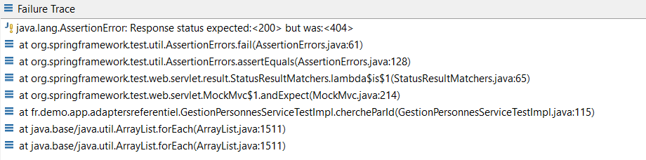
C'est donc au développeur d'ajouter l'ensemble des attendus nécessaires pour compléter et consolider le test de base (si nécessaire). Une fois la couche de persistance complétée, les tests doivent êtres positifs.
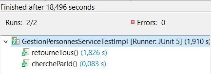
➕ Gestion des champs automatiques
Il a été brièvement évoqué la notion de champs automatiques précédemment (au niveau de la modélisation des entités) mais l'objectif de ce paragraphe est d'entrer plus en profondeur dans la classe de gestion pour l'ensemble de ces champs. A chaque demande de génération de la couche de persistance, c'est la classe [package racine].infra.[nom de l'application]EntityAbs qui est recréée et qui centralise la gestion des champs automatiques. A chaque demande de génération pour la couche de service, c'est la classe [package racine].domain.entities.[nom de l'application]EntityAbs qui est recréée et qui centralise les attributs pour mise à disposition au niveau des différents objets métier.
Champs prédéfinis
Comme précité; il existe trois types de champs automatiques "prédéfinis" qui sont respectivement les champs :
- Xtopsup : gère la suppression logique des entités dans le cas ou la base de données ne doit pas permettre la suppression physique des informations. Cet indicateur, sous la forme d'un booléen, est piloté automatiquement par Spring Data à l'aide des annotations suivantes au niveau de chaque entité :
@SQLDelete(sql = "UPDATE SCH.TBL_PERSONNE SET xtopsup = true WHERE TBL_PERSONNE_ID = ?")
@SQLRestriction("xtopsup = false")
❗ Ces annotations sont pour l'instant positionnées au niveau de chaque entité et non au niveau de la classe parent (commune à l'ensemble des entités) afin d'apporter plus de flexibilité si toutefois une entité échappe à cette règle. A voir si plus tard cela est véritablement utile et si cette solution est toujours pérenne.
-
Xdmaj : La dernière date de mise à jour pour l'entité, il s'agit d'un indicateur standard sous forme de Timestamp.
-
Xuuid : Un identifiant unique universel pour l'entité. Il est à noter que cette identifiant ne doit jamais être modifié par la suite, hors il existe toutefois un "setter" pour cet attribut (sinon il est impossible d'effectuer les mappings entre entités et objets de transfert). Cepandant, afin d'assurer l'immutabilité de cet attribut, il est considéré comme non modifiable au niveau JPA.
/** Identifiant unique universel. */
@Column(name = "xuuid", nullable = false, unique = true, updatable = false)
protected UUID xuuid;
Toutes les autres types de champs (String, Long, Boolean, etc...) sont (comme vu au niveau du formulaire de création), ajoutables en tant que champs automatiques à l'ensemble des entités.
❗ Pour rappel, les champs automatiques sont des champs destinés à la couche de persistance, ils sont donc présents au niveau des entités et des objets métier uniquement, mais ne sont jamais transférés au niveau des services REST (la seule exception à la règle étant l'identifiant unique universel). Ainsi au niveau des mappeurs, la seule recopie globale se situe dans la copie de l'entité vers le dto afin de mettre à disposition de l'objet de transfert ces informations et de rendre possibles les traitements internes métier se basant sur ces informations.
Cycle de vie
L'initialisation de ces champs est centralisée au niveau de la classe de définition des champs automatiques et sont gérés avec les annotations "@PrePersist" et/ou "@PreUpdate". L'annotation "@PrePersist" est appelée uniquement lors de la création du tuple dans la base de données, "@PreUpdate" est appelé lors des demandes de mise à jour (totale ou partielle).
Par exemple :
@PrePersist
public void prePersist() {
// Start of user code c68eaf37cb78a1bd3a58dc7e563107ed
this.xuuid = UUID.randomUUID();
this.xtopsup = false;
// End of user code
}
❗ Si l'écriture est automatique pour les champs Xtopsup et Xuuid, dans le cas ou d'autres champs sont ajoutés, ne pas oublier de les initialiser correctement avec les valeurs désirées ou de les mettre à jour dans l'une de ces deux méthodes sous peine d'avoir des erreurs (valeur nulle) à la création du tuple dans la base de données.
Il est possible de vouloir désactiver cette initialisation automatique dans le cadre de traitements spécifiques ou de tests (c'est d'ailleurs le cas pour le test unitaire sur le contrôle d'insertion de l'ensemble des attributs en base de données cf : "testAllFieldsInserted()"). La classe contient donc un indicateur de demande de désactivation pour l'initialisation de ces champs, cet indicateur est non persistant pour la couche de persistance :
@Transient
private boolean disableAutoInit;
Et fait le véritable code généré (avec ce contrôle supplémentaire) pour "@PrePersist" (et "@PreUpdate") est du type :
@PrePersist
public void prePersist() {
if (!this.disableAutoInit) {
// Start of user code c68eaf37cb78a1bd3a58dc7e563107ed
setXtopsup(false);
setXdmaj(Instant.now());
setXuuid(UUID.randomUUID());
// End of user code
}
}
Avant d'effectuer le traitement ou le test, simplement demander au niveau de l'entité, la désactivation des annotations et renseigner "manuellement" les différents attributs de l'entité à l'aide du code suivant :
PersonneEntityImpl personne = new PersonneEntityImpl();
personne.setDisableAutoInit(true);
personne.setXtopsup(true);
personne.setXdmaj(Instant.now().truncatedTo(....);
personne.setXuuid("axd125fg.......");
L'avantage de cet attribut est qu'il est positionnable au niveau d'un seul traitement alors que l'utilisation de profils (@ActiveProfile) est, quant à elle, disponible uniquement au niveau de la classe de traitement. Mais encore une fois, cet attribut peut fonctionner en collaboration avec l'utilisation de profils.
❗ Note : Les objets de transfert et les objets de sérialisation (pour les services REST) ont eux aussi leur classe parent, mais épurée selon le type de l'objet (DTO ou XTO). Cette classe est regénérée au moment de la demande de génération de la couche de services et a volontairement le même nom [nom de l'application]EntityAbs afin de bien rappeler qu'il s'agit avant tout d'attributs spécifiques à l'entité et non au DTO.
üîë Gestion de la s√©curit√©
Par défaut, la sécurité des services REST est toujours activée, il est en effet considéré que tout service devrait à priori être sécurisé. Toutes les classes concernant la gestion de la sécurité sont situées au niveau du package suivant : [package racine].app dans le projet d'infrastructure.
La configuration de la sécurité pour l'ensemble de l'application se nomme : [nom de l'application]SecurityConfig et son code par défaut est le suivant :
@Configuration
@EnableWebSecurity
class DemoSecurityConfig {
@Bean
public SecurityFilterChain tokenFilterChain(HttpSecurity http) throws Exception {
return http.cors(Customizer.withDefaults()).csrf(csrf -> csrf.disable())
.sessionManagement(session -> session.sessionCreationPolicy(SessionCreationPolicy.STATELESS))
.authorizeHttpRequests(request -> {
request.requestMatchers("/**").permitAll().anyRequest().permitAll();
}).build();
}
}
Pour l'instant on peut constater que toutes les URIs sont en accès libre ce qui semble contredire la précédente affirmation mais la sécurité est quant à elle bien enclanchée, même si dans le cadre de la modélisation les développeurs ne veulent sécuriser aucun service !
❗ Avec les options prises pour Pacman quelle que soit la sécurité modélisée (Http, ApiKey, etc...) le service va attendre un jeton de type JWT. Si cela fait partie intégrante de la norme pour Oauth2, c'est une décision qui a été prise dans le cadre de l'utilisation d'une sécurité de type Http ou Apikey. Dans ces deux derniers cas, un service d'obtiention du jeton est automatiquement généré sur le point de terminaison : "/token".
Modélisation
Dans le cadre de l'application "demo" l'exemple ici donné va être la modélisation d'une sécurité de type Open Id Connect (sécurité de tpe Oauth2 la plus courante pour les applications importantes). La sécurité se modélise toujours au niveau du composant dans le diagramme de modélisation SOA. Ceci s'effectue au niveau de l'onglet "Security Schemes" dans les propriétés du composant.
❗ Il est à noter que, dans la version actuelle de Pacman il est pour l'instant impossible de modéliser plusieurs sécurités au niveau du composant.

Une fois la première étape de saisie effectuée, effectuer une double-clique sur la ligne de définition de la nouvelle sécurité qui est apparue et dans la nouvelle fenêtre, simplement renseigner l'URI pour le serveur d'authentification (il est à noter que dans le cadre d'une sécurité de type OIDC, le flow est authomatiquement vérouillé à "AUTHORIZATION CODE"). Le nom de la sécurité est, quant à lui, totalement libre afin d'être explicite pour les développeurs.
Enfin, il est possible de renseigner si besoin les "Scopes" nécessaires en effectant un double-clique sur le "Flow" et en renseignant pour chaque "Scope" les rubriques "Name" et "Description".

Une fois le schéma de sécurité défini, se positionner au niveau des différents services et ajouter la sécurité, soit directement au niveau du service, soit plus spécifiquement au niveau des différentes opérations qui ont été modélisées (si par exemple une des opérations ne doit pas être sécurisée). Pour ce faire, se positionner sur l'onglet "Security" et ajouter la sécurité désirée.

Une clé rouge (ou orange si c'est le service qui a été sécurisé dans sa globalité) doit alors apparaitre au niveau de chaque opération afin de confirmer que désormais, l'opération est soumise à validation d'un jeton de sécurité.
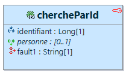
Il est aussi possible d'ajouter si besoin des métadonnées supplémentaires de permission au niveau des différentes opérations afin de spécifier un (ou des) rôle(s) pour donner accès au service. Se positionner au niveau de l'opération et au niveau de l'onglet "Metadatas" et sélectionner selon le besoin les métadonnées "PERMISSION", "PERMISSION_OR" et "PERMISSION_AND"
Pour ces annotations, le corps est important, il convient donc de supprimer la description de la métadonnée qui est positionnée par défaut dans le corps et de la remplacer par le rôle désiré pour l'obtention de la permission d'accès. Ici par exemple, il est nécessaire que l'utilisateur ait le rôle "ADMIN" ou "READ".
Génération
La demande de génération est de type "SOA", toutes les informations concernant la sécurisation des services REST sont donc analysés et générées au moment de la demande de génération pour la couche de service. Suite à la génération, le nouveau code pour la classe de configuration de la sécurité devient donc le suivant :
@Bean
public SecurityFilterChain tokenFilterChain(HttpSecurity http) throws Exception {
return http.cors(Customizer.withDefaults()).csrf(csrf -> csrf.disable())
.sessionManagement(session -> session.sessionCreationPolicy(SessionCreationPolicy.STATELESS))
.authorizeHttpRequests(request -> {
/**
* Gestion de la sécurité pour les apis de santé, spécifications OpenAPI, etc...
*/
request.requestMatchers(whiteListPaths).permitAll()
/** Liste des uris non sécurisées. */
/** Liste des uris sécurisées avec un rôle spécifique. */
// Start of user code f93dcfaeb3f3471dffb8f1981854aebe
// End of user code
/** Par défaut, tout le reste est sécurisé. */
.anyRequest().authenticated();
})
.oauth2ResourceServer(
oauth2 -> oauth2.bearerTokenResolver(new DemoJwtTokenResolver())
.jwt(Customizer.withDefaults()))
.exceptionHandling(Customizer.withDefaults()).build();
}
Ce nouveau code appelle quelques explications :
• La ligne d'authorisation a été modifiée et prend maintenant une variable nommée "whiteListPaths". cette variable est injectée un peu plus haut dans le code à l'aide des lignes suivantes :
@Value("${security.whitelist.paths}")
private String[] whiteListPaths;
Grâce à cette injection, la variable va prendre automatiquement le contenu du paramétre "security.whitelist.paths" présent dans le fichier de configuration de l'application "application.properties". Par rappel (et par défaut) la valeur de ce paramètre est le suivant :
# ----------------------------------------------------------------------------------------------
# LISTE DES URIS NON SECURISEES
# ----------------------------------------------------------------------------------------------
# Ne pas oublier de reporter les modifications issues des rubriques precedentes
security.whitelist.paths=/swagger-ui/**,/api-docs/**,/actuator/**
Ce qui permet donc d'éviter de sécuriser ces différentes ressources...
• Pour toutes les URIs qui ne sont pas sécurisées, une ligne par URI est ajoutée sous la rubrique "Liste des uris non sécurisées".
Il s'agit d'une ligne du type :
/** Liste des uris non sécurisées. */
.requestMatchers("/v0/personnes/xxx").permitAll()
❗ Il est donc particulièrement important de bien réfléchir à la hiérarchie de ses URIs afin déviter d'avoir des trous de sécurité et d'ouvrir une URI qui serait en amont d'une URI qui, elle, est sécurisée.
• Si des métadonnées de permission avaient été positionnées (comme l'option avait été vue précedemment au niveau de la modélisation), sous la rubrique "Liste des uris sécurisées avec un rôle spécifique" des lignes supplémentaires auraient été ajoutées, ligne de type :
/** Liste des uris sécurisées avec un rôle spécifique. */
.requestMatchers("/v0/personnes/{id}").hasAnyRole("ROLE_ADMIN", "ROLE_TOTO")
• Pour récupérer le jeton JWT, un "Resolver" est codé au niveau de la classe de configuration de la sécurité (afin de centraliser l'ensemble du code de sécurité au niveau de cette classe). Cette méthode va par défaut, toujours rechercher le jeton au niveau de l'en-tête avec comme clé de propriété : "Authorization", ce qui est la norme.
En cela, cette méthode ne rajoute rien de plus à l'implémentation par défaut, sauf qu'au niveau de la modélisation et dans le cadre des sécurités de type Http ou ApiKey, il est possible de choisir le mode de passage différent pour ce jeton. Cette méthode va donc, en fonction de la modélisation, éventuellement ajouter une recherche au niveau de la query, des cookies, etc... (la recherche dans l'en-tête est toujours privilégiée).
Le code par défaut pour cette méthode est le suivant :
@Bean
public BearerTokenResolver jwtTokenResolver() {
return new BearerTokenResolver() {
@Override
public String resolve(HttpServletRequest request) {
/** Recherche dans l'en-tête, le plus courant (toujours présent). */
String authHeader = request.getHeader("Authorization");
if (authHeader != null && authHeader.startsWith("Bearer ")) {
return authHeader.substring(7);
}
return null; // Aucun jeton trouvé.
}
};
}
• Afin de pouvoir décoder le jeton JWT, un décodeur est mis à disposition de la configuration de sécurité. Toutes les lignes pour cette méthode sont entre balises de type "user code" afin que le développeur puisse ajouter, modifier, supprimer et surtout vérifier la présence de toutes les demandes d'informations attendues au niveau du jeton.
@Bean
public JwtDecoder jwtDecoder() {
// Start of user code 7115a832499feae23171aafa8601602f
SecretKeySpec secretKey = new SecretKeySpec(this.jwtKey.getBytes(), 0, this.jwtKey.getBytes().length,
"HmacSHA256");
NimbusJwtDecoder decoder = NimbusJwtDecoder.withSecretKey(secretKey).macAlgorithm(MacAlgorithm.HS256).build();
/** Validation issuer. */
OAuth2TokenValidator<Jwt> withIssuer = JwtValidators.createDefaultWithIssuer("http://votre-application");
/** Validation subject. */
OAuth2TokenValidator<Jwt> withSubject = jwt -> {
String subject = jwt.getSubject();
return (subject != null && !subject.isBlank()) ? OAuth2TokenValidatorResult.success()
: OAuth2TokenValidatorResult.failure(new OAuth2Error("jeton non valide", "Manque le sujet", null));
};
/** Validation audience. */
OAuth2TokenValidator<Jwt> withAudience = jwt -> {
List<String> audience = jwt.getAudience();
return (audience != null && audience.contains("votre-audience")) ? OAuth2TokenValidatorResult.success()
: OAuth2TokenValidatorResult
.failure(new OAuth2Error("jeton non valide", "Audience invalide", null));
};
OAuth2TokenValidator<Jwt> validator = new DelegatingOAuth2TokenValidator<>(withIssuer, withSubject, withAudience);
decoder.setJwtValidator(validator);
// End of user code
return decoder;
}
• Au niveau de la couche d'infrastructure, si les développeurs veulent accéder aux différentes informations contenues dans le jeton, une classe utilitaire [nom de l'application]CurrentJwtTokenHelper est aussi disponible et appelable directement au niveau de n'importe quelle partie de code.
• Quelle que soit le type de sécurité, au niveau des applications générées par Pacman, cela se soldera toujours pas le décodage d'un jeton de type JWT.
Si la sécurité est de type "ApiKey" ou "Http", quelques ajouts de code sont alors effectués au niveau de la classe de gestion de la sécurité, comme par exemple, la mise à disposition de l'encodeur JWT qui va se baser sur une clé symétrique contenue dans le fichier "application.properties", la mise en place automatique d'une URI "/token" pour l'obtention du jeton, etc...
@Bean
@Order(1)
public SecurityFilterChain authFilterChain(HttpSecurity http) throws Exception {
return http.cors(Customizer.withDefaults()).csrf(csrf -> csrf.disable())
.sessionManagement(session -> session.sessionCreationPolicy(SessionCreationPolicy.STATELESS))
.securityMatcher("/token")
.authorizeHttpRequests(auth -> {
auth.anyRequest().authenticated();
})
.exceptionHandling(Customizer.withDefaults())
.httpBasic(basic -> basic.authenticationEntryPoint(authEntryPoint))
.build();
}
De même une classe supplémentaire de création du jeton est générée au niveau du package [package-racine].app, il s'agit de la classe [nom de l'application]JwtTokenService qui va permettre de créer le jeton JWT. Enfin un service [nom de l'application]JwtTokenControllerImpl est aussi automatiquement généré au niveau du package [nom de l'application].app.adapters.controllers.
Ce service est le point d'entrée (toujours sous le point de terminaison "/token") pour obtenir ledit jeton, et ceci en échange d'un couple de données d'identification, généralement un identifiant et un mot de passe. Le code du contrôleur est le suivant :
@Controller
@RequestMapping("/token")
public class DemoJwtTokenControllerImpl {
/** Décodeur pour le jeton jwt. */
private final DemoJwtTokenService jwtService;
public DemoJwtTokenControllerImpl(DemoJwtTokenService jwtService) {
this.jwtService = jwtService;
}
@PostMapping
public ResponseEntity<?> authenticate(Authentication authentication) {
// Start of user code 29748a05013c1ae3bc50822d509ea36e
String token = this.jwtService.generateToken(authentication);
return ResponseEntity.status(200).body(token);
// End of user code
}
}
Le développeur peut alors ajouter l'ensemble de son code personnalisé afin de décoder les informations d'authentification (balises de type "user code") et fournir le jeton à l'aide du service qui a été injecté.
• De manière générale (et même si aucune modélisation de sécurité n'a encore été effectuée), on constate (ce qui est aussi la résultante des précédents points) la présence des lignes suivantes :
.oauth2ResourceServer(oauth2 -> oauth2
.bearerTokenResolver(jwtTokenResolver)
.jwt(Customizer.withDefaults()))
.exceptionHandling(Customizer.withDefaults())
.build();
Spring Boot n'a pas nativement de système de décodage des jetons JWT, il convient donc d'utiliser celui qui est fourni par les ressources pour la gestion OAuth2. C'est pourquoi OAuth2 sera toujours présent au niveau de la classe de configuration de la sécurité, même si la sécurité demandée est de type Http ou ApiKey.
Tests
Il est alors possible d'effectuer de nouveaux test (avec Swagger UI par example) afin de vérifier que l'appel est désormait sécurisé et que toute tentative d'accès non authorisé se soldera par un code de type 401 ou 403.
❗ Dans le cas de l'utilisation de l'interface Swagger UI, et d'une sécurité de type Oauth2, il est important de comprendre que les points de terminaison doivent être valides, ce qui signifie que le serveur d'authentification doit exister et être en état de fonctionnement. dans le cas contraire, le service ne sera pas considéré comme sécurisé et l'icône avec le cadena ne sera pas affichée.
üß© G√©n√©ration des relations
Dans ce chapitre, est abordé la gestion des relations dans l'outil de modélisation, en présentant les différents types de relations supportées (association simple, bidirectionnelle, récursive, etc.) ainsi que leurs variantes cardinalitaires. Pour chaque type de relation, est détaillé la manière dont elle peut être exprimée dans le modèle ainsi que le code généré automatiquement par l’outil, tant du point de vue des scripts SQL que de la configuration JPA.
L’objectif est de fournir une vue claire et pratique des possibilités offertes, tout en mettant en lumière les impacts concrets de chaque choix de modélisation sur le code qui est produit.
Ici deux entités seront modélisées, avec toujours pour noms respectifs, simplement A et B.
❗ Attention dans ce chapitre, à ne pas confondre bidirectionnel au sens JPA et bidirectionnel au sens de la modélisation. Ce n'est pas parceque le développeur doit tirer une relation bidirectionnelle (appelée telle qu'elle au niveau de l'outil de modélisation) que l'on désire au niveau JPA attaquer la relation dans les deux sens (bidirectionnel au sens JPA). La nécessité du bidirectionnel au sens JPA sera à étudier selon les éventuels futurs besoins au niveau des générateurs Pacman.
❗ Au niveau des scripts SQL, ne sont pour l'instant affichées que les créations de table afin de rapidement visualiser les différentes relations. Ne sont donc pas présentés les indexs et contraintes inhérentes à la création de ces relations.
Relation (1)/(0,1)
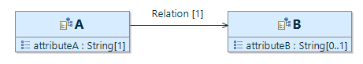
La seule différence selon que la cardinalité soit à 1 ou à (0,1) consiste en la présence de "not null" au niveau de la clé étrangère pour l'entité A. La navigabilité étant dirigée vers l'entité B, c'est l'entité A qui récupère la clé étrangère.
Le code SQL généré est donc le suivant :
create table A
(
/* PK de la table A */
A_ID NUMBER(19) not null,
ATTRIBUTEA VARCHAR(100) not null,
/* FK vers la table B */
B_ID NUMBER(19) not null,
constraint A_PK1_1 primary key (A_ID)
);
create table B
(
/* PK de la table B */
B_ID NUMBER(19) not null,
ATTRIBUTEB VARCHAR(100),
constraint B_PK1_1 primary key (B_ID)
);
Au niveau des classes Java, on retrouve une relation de type @ManyToOne au niveau de l'entité A (Pacman n'utilise pas les relations @OneToOne). Même si cela n’est pas exclusif dans le sens de la base de données et que cela n'est pas intuitif, du point de vue métier, la cardinalité (0,1) peut cependant, être exprimée avec @ManyToOne, c'est le choix qui a été effectué pour le générateur Pacman.
En effet, @ManyToOne est plus courant et mieux optimisé dans les moteurs JPA/Hibernate. Il est chargé plus efficacement, et les jointures SQL sont plus simples. Si à terme la relation devait évoluer vers (0,*), @ManyToOne s’adapte sans pour autant casser le schéma. Par ailleurs, @OneToOne impose généralement une contrainte UNIQUE sur la colonne de jointure, ce qui peut poser des problèmes de performances si mal indexé, surtout sur de grandes tables.
Entité A :
@ManyToOne(fetch = FetchType.EAGER)
@JoinColumn(name = "B_ID", referencedColumnName = "B_ID", nullable = true)
private BEntityImpl b;
Relation (0,*)/(1,*)

Ici, avec la navigabilité dirigée vers B, c'est l'entité B qui récupère la clé étrangère pour pointer sur l'entité A. La relations se traduit par un @OneToMany au niveau de l'entité A et un @ManyToOne au niveau de l'entité B. Par défaut, @OneToMany sans mappedBy crée une relation unidirectionnelle avec une jointure explicite. Dans un modèle bidirectionnel, il est courant d’utiliser mappedBy dans A, et un @ManyToOne dans B. Cela permet à JPA de comprendre que la relation est gérée par B (le côté possédant la clé étrangère).
create table A
(
/* PK de la table A */
A_ID NUMBER(19) not null,
ATTRIBUTEA VARCHAR(100) not null,
constraint A_PK1_1 primary key (A_ID)
);
create table B
(
/* PK de la table B */
B_ID NUMBER(19) not null,
ATTRIBUTEB VARCHAR(100),
/* FK vers la table A */
A_ID NUMBER(19),
constraint B_PK1_1 primary key (B_ID)
);
Entité A :
@OneToMany(fetch = FetchType.EAGER, mappedBy = "a")
private List<BEntityImpl> relation;
Entité B :
@ManyToOne
@JoinColumn(name = "A_ID", nullable = false)
private AEntityImpl a;
Relation récursive (1)/(0,1)

Ici la relation récursive est annotée @ManyToOne, de même que pour une relation (1)(0,1) entre deux entités. La seule différence est que la clé étrangère prend le nom de la relation (avec toujours "_ID" comme suffixe).
create table A
(
/* PK de la table A */
A_ID NUMBER(19) not null,
ATTRIBUTEA VARCHAR(100) not null,
/* FK vers la table A */
RELATIONA_ID NUMBER(19),
constraint A_PK1_1 primary key (A_ID)
);
Entité A :
@ManyToOne(fetch = FetchType.EAGER)
@JoinColumn(name = "RELATIONA_ID", referencedColumnName = "A_ID", nullable = true)
private AEntityImpl relationA;
Relation récursive (0,*)/(1,*)
Comme pour les relations bidirectionnelles, une table de liaison est automatiquement créée, cette table prend pour nom la concaténation du nom de la table et du nom de la relation. Chaque nom est séparé par un underscore. Bien noter cependant que le nom de l'attribut au niveau de la classe est bien le nom de la relation.

create table A_RELATIONA
(
A_ID NUMBER(19) not null,
A_RECURSIVE_ID NUMBER(19) not null,
constraint A_RELATIONA_PK2_1 primary key (A_ID, A_RECURSIVE_ID)
);
Entité A :
@ManyToMany(fetch = FetchType.EAGER, targetEntity = AEntityImpl.class)
@JoinTable(name = "A_RELATIONA", joinColumns = @JoinColumn(name = "A_ID"), inverseJoinColumns = @JoinColumn(name = "A_RECURSIVE_ID"))
private List<AEntityImpl> relationA;
Relation bidirectionnelle (0,*)/(1,*)
❗ Il est impossible avec Pacman d'avoir des relations bidirectionnelles avec la navigabilité dans les deux sens, il est donc nécessaire après avoir tiré la relation bidirectionnelle entre deux entités, de supprimer une des deux navigabilités.
Cette relation utilise l'annotation @ManyToMany soit au niveau de l'entité A, soit au niveau de l'entité B, selon la navigabilité qui a été initialement modélisée. Ici la navigabilité est pointée sur B, c'est donc l'entité A qui prend la relation. Par ailleurs, une table de liaison est automatiquement générée avec la concaténation du nom de la table et celui de la relation (dépend de la navigabilité). Les deux noms sont séparés par un underscore. Bien noter par contre que le nom de l'attribut au niveau de l'entité est celui de la relation (dépend aussi du sens de la navigabilité).

create table A_RELATIONB
(
A_ID NUMBER(19) not null,
B_ID NUMBER(19) not null,
constraint A_RELATIONB_PK2_1 primary key (A_ID, B_ID)
);
Entité A :
@ManyToMany(fetch = FetchType.EAGER, targetEntity = BEntityImpl.class)
@JoinTable(name = "A_RELATIONB", joinColumns = @JoinColumn(name = "A_ID"), inverseJoinColumns = @JoinColumn(name = "B_ID"))
private Set<BEntityImpl> relationB;
❗ On peut aussi noter que dans le cadre des relations bidirectionnelles @ManyToMany, Pacman utilise des Set et non des List pour le stockage des collections. Cela est préconisé avec JPA car un Set garantit l’unicité des éléments, ce qui est cohérent avec le modèle relationnel sous-jacent (en base de données, une table de jointure pour une relation @ManyToMany n’a pas de doublons.). En outre, JPA (notamment avec Hibernate) traite les Set de manière plus simple et plus performante. Enfin le Set n’a pas d’ordre, il correspond naturellement à ce que fait la base de données (pas d’ordre garanti dans une table de jointure).
üîß Documentation Open Api
Lors de la génération de la couche de services, outre l'ensemble du code à éxécuter, la documentation Open Api est aussi créée automatiquement afin de pouvoir générer un fichier Swagger et être lue (notamment) par l'interface "Swagger-ui". Cette documentation (par le biais d'annotations), est générée à trois niveaux :
- La documentation générale concernant l'ensemble des informations relatives à l'application.
- La documentation spécifique pour l'appel de chaque service (les différentes opérations modélisées).
- La documentation pour chaque objet sérialisé, en entrée ou en sortie.
❗ Noter que lorsque l'on parle ici de service, il s'agit de service au sens global du terme, un service est modélisé avec des opérations, mais par rapport au client, une seule opération est aussi un service qui est fourni par le fournisseur de service, à ce niveau tout est service...
Documentation générale
Toutes les informations concernant la documentation générale de l'application (ainsi que celles concernant la sécurité) est à modéliser au niveau du composant dans le fichier de modélisation [nom de l'application].soa, principalement au niveau de l'onglet "Exposition".
❗ Il n'est possible de modéliser qu'un seul composant au niveau du diagramme soa, toute velléité pour modéliser plusieurs composant se soldera par une alerte au niveau de la validation du diagramme.
Une fois la demande de génération de la couche de services effectuée, toutes les informations globales sont centralisées au niveau de la classe (au niveau de l'infrastructure) [package racine].app.[nomde l'application]OpenApiConfig. Cette classe n'est pas destinée à avoir un corps, seules les annotations de type Open Api sont présentes.
Par exemple :
/**
* Configuration de la documentation OpenAPI pour ce composant.
*
* Cette classe déclare la configuration générale de l'API pour Springdoc. Elle
* permet de définir les métadonnées principales de la documentation Swagger,
* telles que le titre, la version, la description, les informations de contact,
* les termes de licence et d'utilisation.
*
* Aucun code métier ou logique n’est présent ici, uniquement des déclarations
* d’annotations à but documentaire.
*
* @see io.swagger.v3.oas.annotations.OpenAPIDefinition
* @see io.swagger.v3.oas.annotations.info.Info
* @see org.springframework.context.annotation.Configuration
*/
@Configuration
@OpenAPIDefinition(info = @Info(title = "referentiel", version = "3.0.3",
description = "Cette API permet de gérer les personnes.",
termsOfService = "https://demo.com/terms/",
contact = @Contact(name = "Support Technique", email = "support@demo.com", url = "https://demo.com/support"),
license = @License(name = "Apache 2.0", url = "http://www.apache.org/licenses/LICENSE-2.0.html")))
class DemoOpenApiConfig {
}
Documentation des services
La documentation pour les différents services est, quant à elle, accrochée à chaque opération qui a été modélisée, il n'y a pas de champ supplémentaire spécifique à saisir, toutes les informations sont récupérées à partir de la modélisation nécessaire (si correctement remplie) pour faire fonctionner un service (avec ses opérations). Cette documentation (toujours sous forme d'annotations) ressemble à ceci (on reprend le précédent exemple de code pour l'opération "chercheParId(...)") mais cette fois avec la documentation Open Api :
@GetMapping(value = "/{id}", produces = "application/json;charset=utf8")
@Operation(operationId = "chercheParId",
description = "Cette méthode retourne la personne qui correspond à l'identifiant passé en paramètre."
, tags = {"GestionPersonnes" }, parameters = {
@Parameter(name = "id", description = "L'identifiant pour la personne."
, required = true, in = ParameterIn.PATH, example = "") })
@ApiResponses(value = {
@ApiResponse(responseCode = "200", description = "OK", content = @Content(mediaType = "application/json",
schema = @Schema(implementation = PersonneXtoImpl.class))),
@ApiResponse(responseCode = "404", description = "La personne n'a pas été trouvée.") })
public ResponseEntity<PersonneXtoImpl> chercheParId(@PathVariable(name = "id", required = true) Long identifiant) {
....
}
Documentation pour les objets sérialisés
Au niveau des objets de type "XTO", seule l'annotation "@Schema" permet de rajouter une description pour chaque attribut (et au niveau de l'objet) :
@Schema(description = "Une personne pour l'application de démo")
public class PersonneXtoImpl implements Serializable {
...
}
/** Le nom de la personne. Cette donnée est obligatoire. */
// Start of user code aee37c30f5d091a495526f636a3527bb
@JsonProperty("nom")
// End of user code
@Schema(description = "Le nom de la personne. Cette donnée est obligatoire.")
private String nom;
Affichage et tests
Il est ainsi possible (après lancement de l'application), d'utiliser l'outil open source Swagger UI qui permet d'afficher et de tester visuellement une API décrite avec Swagger/OpenAPI, ceci, directement dans un navigateur web. Swagger UI va lire le fichier de spécification et le transformer en une interface web qui permet :
- De naviguer dans les endpoints de l’API (groupés par ressource).
- De voir les paramètres, le corps des requêtes ainsi que les réponses attendues.
- D’exécuter des requêtes HTTP directement via les formulaires interactifs.

üìê G√©n√©ration avanc√©e
Mise à disposition de l'entity manager
Au niveau de la couche de persistance, pour l'accès à la base de données, il est préconisé de passer par la notion de "Repository". Spring Data fournit en effet une abstraction très pratique pour la plupart des opérations CRUD et les requêtes simples ou modérément complexes. Cependant, il existe certains cas où il est préférable (ou nécessaire) d'utiliser directement l'EntityManager. Par exemple :
- Effectuer plusieurs opérations dans une seule transaction, avec un contrôle fin sur le flush, clear, ou l'ordre des opérations.
- Utiliser des requêtes dynamiques ou avec critères très complexes.
- Optimiser les performances (batchs, fetch tuning, etc.).
- Faire des utilisations avancées de Lock, Hints, FlushMode, etc...
- Contourner la gestion automatique par Spring Data.
Il est donc possible de demander expressément au générateur d'effectuer l'injection de l'Entity Manager. Comme, au niveau de la modélisation, il s'agit d'une information qui concerne la persistance, il est nécessaire d'agir au niveau de l'entité en positionnant la métadonnée "ENTITY_MANAGER". Cette métadonnée n'a pas besoin de corps, il est donc possible de supprimer ou non le commentaire associé lors de l'affectation de la métadonnée.

Visualisation de la métadonnée associée à l'entité "Personne" :
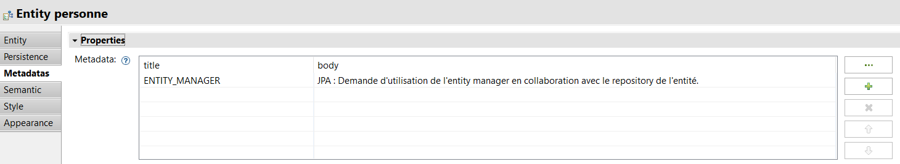
❗ Le résultat ne sera visible par contre, qu'au moment de la demande de génération de la couche de service puisque la classe d'implémentation de la persistance [nom du service]JpaProvider est générée uniquement lors de la création de la couche SOA. Par contre, tout service qui detecte l'utilisation de cette entité (en entrée ou en sortie) va automatiquement bénéficier d'un paramètre supplémentaire au niveau de son constructeur pour injecter et mettre à disposition du développeur l'Entity Manager. Ainsi, dans le cadre de l'application "demo", le code de la classe "GestionPersonnesJpaProviderImpl" devient :
@AdapterService
public class GestionPersonnesJpaProviderImpl implements GestionPersonnesProvider {
// Start of user code 2129864a49adcaa3a812f92be467bf4e
// End of user code
/** Le gestionnaire de persistance de jpa. */
final EntityManager entityManager;
/** Gestionnaires de persistance disponibles. */
final PersonneRepository personneRepository;
/**
* Constructeur.
*/
@Autowired
public GestionPersonnesJpaProviderImpl(final PersonneRepository personneRepository, EntityManager entityManager) {
this.personneRepository = personneRepository;
this.entityManager = entityManager;
// Start of user code 2e3e969fd52202f4f94ef7456a361c15
// End of user code
}
etc...
}
Utilisation du lazy loading
Par défaut, dans les relations, toute entité référencée est automatiquement chargée en "EAGER", ainsi, si une entité référence une autre entité qui référence elle même une autre entité, etc... toute la grappe va être chargée et renvoyée au niveau du service REST. Il existe cependant de nombreux cas ou le chargement paresseux peut être préférable. Pacman met donc à disposition une métadonnée qui peut s'appliquer aux références entre les entités.
Si on rajoute une entité au niveau de la modélisation déjà existante (par exemple, une personne habite à une ou plusieurs adresses), le diagramme devient le suivant :

Il est alors possible de sélectionner le lien qui effectue la référence et de lui affecter la métadonnée "FETCH_LAZY".
❗ Cela n'est pas montré au niveau de ce document, mais il est évident que la modification a aussi été reportée au niveau de la couche SOA avec rajout du DTO et de la relation associée.
Cette métadonnée n'a pas besoin de corps, il est donc possible pour le développeur de supprimer ou non la description pour la métadonnée.

Au niveau du code généré, un nouvel attribut pour la classe "PersonneEntityImpl" est créé, avec le code suivant :
@OneToMany(fetch = FetchType.LAZY, mappedBy = "personne")
private List<AdresseEntityImpl> habite;
Sans annotation le code aurait simplement été du type (par défaut) :
@OneToMany(fetch = FetchType.EAGER, mappedBy = "personne")
private List<AdresseEntityImpl> habite;
Par contre une différence majeure est visible au niveau des mappeurs d'infrastructure, au niveau de la recopie de la liste, le mappeur vérifie auparavant si l'entité référencée est toujours pilotable par JPA. Cela évite de demander le chargement lors de la recopie des objets, recopie encore une fois inhérente à l'architecture hexagonale.
Le code devient alors le suivant :
public static PersonneDtoImpl toDto(final PersonneEntityImpl entity) {
if (null == entity) {
return null;
}
PersonneDtoImpl dto = new PersonneDtoImpl();
try {
dto.setPersonne_id(entity.getPersonne_id());
dto.setNom(entity.getNom());
dto.setPrenom(entity.getPrenom());
dto.setAge(entity.getAge());
dto.setHabite(Hibernate.isInitialized(entity.getHabite())
? entity.getHabite().stream().map(o -> AdresseMapper.toDto(o)).collect(Collectors.toList())
: new ArrayList<AdresseDtoImpl>());
dto.setXtopsup(entity.getXtopsup());
dto.setXdmaj(entity.getXdmaj());
dto.setXuuid(entity.getXuuid());
// Start of user code 856cc109a8cab6eb0a3676613acc6f8f
// End of user code
} catch (Exception e) {
throw new DemoMapperException("Impossible de mapper la classe : PersonneDtoImpl");
}
return dto;
}
Utilisation de cascade
En JPA (Java Persistence API), l'attribut cascade est utilisé pour propager automatiquement certaines opérations (comme persist, merge, remove, etc.) d'une entité parent vers ses entités enfants associées via une relation (@OneToMany, @ManyToOne, @OneToOne, @ManyToMany).
Pour rappel, les différentes valeurs possibles de propagation pour cet attribut sont :
| Valeur | Description | Opérations couvertes |
|---|---|---|
CascadeType.ALL |
Applique toutes les opérations de persistance | PERSIST, MERGE, REMOVE, REFRESH, DETACH |
CascadeType.PERSIST |
Propage l'opération de persistance | PERSIST |
CascadeType.MERGE |
Propage l'opération de fusion | MERGE |
CascadeType.REMOVE |
Propage l'opération de suppression | REMOVE |
CascadeType.REFRESH |
Propage l'opération de rafraîchissement | REFRESH |
CascadeType.DETACH |
Propage l'opération de détachement | DETACH |
Si besoin, il est possible d'ajouter le paramètre "Cascade" dans le cadre du chargement des relations. Se positionner sur la relation et rajouter une métadonnée "CASCADE". Ici le corps de la métadonnée est important, supprimer la description et renseigner le type de "Cascade" désiré.
Une fois la demande de génération de la couche de persistance effectuée, le code des relations devient alors :
- Pour PersonneEntityImpl :
@OneToMany(fetch = FetchType.EAGER, cascade = CascadeType.PERSIST, mappedBy = "personne")
private List<AdresseEntityImpl> habite;
- Pour AdresseEntityImpl :
@ManyToOne()
@JoinColumn(name = "PERSONNE_ID", nullable = false)
private PersonneEntityImpl personne;
Il est bien entendu possible au niveau de la métadonnée, de rentrer plusieurs valeurs séparées par une virgule, par exemple "PERSIST, MERGE, DETACH" donnera à la génération :
@OneToMany(fetch = FetchType.EAGER, cascade = {CascadeType.PERSIST, CascadeType.MERGE, CascadeType.DETACH}, mappedBy = "personne")
private List<AdresseEntityImpl> habite;
Utilisation des transactions
Il est possible de positionner des transactions soit directement au niveau de l'infrastructure pour la couche de persistance, soit au niveau plus général de la couche métier. Dans le cas de la couche d'infrastructure, des balises de type "user code" permettent de positionner l'annotation "@Transactionnal" de JPA au niveau de la classe [nom du service]JpaProviderImpl :
// Start of user code 488633ccb55331e8e15a31ef0159efbc
@Transactional
// End of user code
private PersonneEntityImpl sauvegarde_invoke(final PersonneDtoImpl personne, etc....) {
// Start of user code 0d7aeafd27536987cf0cf491de14ca07
opération 1
opération 2
etc...
// End of user code
}
Comme précité, il est aussi possible de poser l'annotation plus haut au niveau de la couche métier sur la classe [nom du service]ServiceImpl, soit directement sur la totalité de la classe :
// Start of user code 4a236703b9d5317c198dc3e3d6db3fc6
@Transactionnal
// End of user code
@DomainService
public class GestionPersonnesServiceImpl implements GestionPersonnesService {
etc...
}
soit au niveau d'une ou plusieurs opérations :
// Start of user code ea90c22bb8cac819a5c286613bb46870
@Transactionnal
// End of user code
@Override
@Requirement(value = { RequirementsEnum.REQ_PERSONNE_AGE })
public PersonneDtoImpl sauvegarde(final PersonneDtoImpl personne, etc...) {
etc...
}
❗ Dans le dernier cas, il s'agit ici de l'annotation @Transactionnal du domaine ([package racine].domain.Transactionnal) et non celle de JPA, puisque le domaine est totalement indépendant de toute technologie. Pour rappel, cette annotation est gérée automatiquement grâce aux classes situées dans le package d'infrastructure : [package racine].infra*
Utilisation de l'héritage
❗ La modélisation de l'héritage est encore en version Alpha, elle sera pleinement supportée très prochainement.
Avec Pacman l'héritage entre entités est supporté afin de favoriser la réutilisation et la structuration du modèle métier. Cependant, de manière générale, il est conseillé de ne pas en abuser car il ne faut pas oublier que l’implémentation de l’héritage en JPA peut introduire une complexité technique non négligeable et avoir un impact négatif sur les performances.
En effet, si JPA propose par défaut plusieurs stratégies de mapping pour l’héritage, aucune des stratégies disponibles (SINGLE_TABLE, JOINED, TABLE_PER_CLASS) n’est pleinement satisfaisante. Chacune présente des compromis importants en termes de performances, de lisibilité des données ou de complexité des requêtes SQL générées. Par exemple, la stratégie SINGLE_TABLE centralise toutes les entités dans une seule table avec des colonnes parfois inutilisées, ce qui peut alourdir la structure et la maintenance. La stratégie JOINED, plus propre sur le plan du modèle relationnel, implique de multiples jointures coûteuses à l'exécution. Quant à TABLE_PER_CLASS, elle rend les requêtes globales complexes voire inefficaces.
Ces limitations font que l’héritage JPA doit être abordé avec prudence. Il est donc recommandé de l'utiliser avec parcimonie et uniquement lorsqu’il apporte une réelle valeur métier, afin de garantir un code généré plus simple, plus lisible et plus efficace à l'exécution.
Cela dit, Pacman permet de pallier pour majeure partie à ces limitations car il génère sa propre implémentation de l'héritage.
Les règles sont les suivantes :
- Tous les attributs définis dans les entités parentes sont automatiquement repris dans les sous-entités.
- Toutes les relations définies dans les entités parentes sont automatiquement reprises dans les sous-entités.
- Ceci implique la création d'une table de liaison par sous-entité lors de relations bidirectionnelles de type (0,*) ou (1,*).
- Ceci implique la multiplication des identifiants pour les clés étrangères dans le cas des relations non-bidirectionnelles de type (0,*) ou (1,*).
Quant utiliser l'héritage avec Pacman et sous quelle forme ?
- ✅ pleinement supporté, aucun impact de performance.
- ⚠️ supporté mais en version alpha pour l'instant.️
- üõ†Ô∏èÔ∏èÔ∏è en cours d'impl√©mentation, non finalis√© sur l'ensemble des couches.
✅ Factoriser un ensemble d'attributs communs à plusieurs entités. Ici il ne faut pas confondre avec la notion de champs automatiques vue précédement qui elle, applique des attributs mais sur la totalité des entités modélisées. Avec l'héritage il est ainsi possible d'avoir un contrôle plus fin sur les attributs communs.
⚠️ Ajouter des relations de type (0,1) entre les entités héritées.
üõ†Ô∏èÔ∏èÔ∏èÔ∏èÔ∏èÔ∏è Ajouter des relations de type (0,*) entre les entit√©s h√©rit√©es.
üõ†Ô∏èÔ∏èÔ∏èÔ∏èÔ∏èÔ∏è Ajouter des relations bidirectionnelles de type (0,*) entre les entit√©s h√©rit√©es.
A titre indicatif, voici un exemple de modélisation avec héritage qui regroupe l'ensemble des possibilités disponibles (au niveau des différentes relations) par Pacman.
Et le code SQL généré (ne sont pas présentées pour l'instant les couches Java au niveau entités et objets métier) :
/******************************************************************/
/* Base de donnees: h2 */
/* Application: demo */
/* Date de creation: 02/06/2025 12:59:43 */
/******************************************************************/
/******************************************************************/
/* Sequences */
/******************************************************************/
create sequence CAMION_SEQ start with 1;
create sequence MOTO_SEQ start with 1;
create sequence FOURGONNETTE_SEQ start with 1;
create sequence CITADINE_SEQ start with 1;
create sequence BERLINE_SEQ start with 1;
create sequence COULEUR_SEQ start with 1;
create sequence REMORQUE_SEQ start with 1;
create sequence GARAGE_SEQ start with 1;
create sequence CONDUCTEURPRINCIPAL_SEQ start with 1;
create sequence TRAJET_SEQ start with 1;
create sequence PROPRIETAIRE_SEQ start with 1;
create sequence PASSAGER_SEQ start with 1;
/******************************************************************/
/* TABLE : CAMION */
/******************************************************************/
create table CAMION
(
/* PK de la table CAMION */
CAMION_ID NUMBER(19) not null,
TYPECAMION VARCHAR(100) not null,
CHARGEUTILE NUMBER(10) not null,
IMMATRICULATIONVEHICULE VARCHAR(100) not null,
MARQUEVEHICULE VARCHAR(100) not null,
TYPECARBURANT VARCHAR(100),
/* FK vers la table CONDUCTEURPRINCIPAL */
CONDUCTEURPRINCIPAL_ID NUMBER(19),
/* FK vers la table GARAGE */
GARAGE_ID NUMBER(19),
/* FK vers la table PROPRIETAIRE */
PROPRIETAIRE_ID NUMBER(19) not null,
/* FK vers la table REMORQUE */
REMORQUE_ID NUMBER(19),
/* FK vers la table CAMION */
APOURVEHICULEDEREMPLACEMENT_ID NUMBER(19),
constraint CAMION_PK1_1 primary key (CAMION_ID)
);
create index CAMION_IDX1_1 on CAMION(CONDUCTEURPRINCIPAL_ID);
create index CAMION_IDX1_2 on CAMION(GARAGE_ID);
create index CAMION_IDX1_3 on CAMION(PROPRIETAIRE_ID);
create index CAMION_IDX1_4 on CAMION(REMORQUE_ID);
create index CAMION_IDX1_5 on CAMION(APOURVEHICULEDEREMPLACEMENT_ID);
comment on column CAMION.CAMION_ID is 'Clé primaire pour la table CAMION';
comment on column CAMION.CHARGEUTILE is 'commentaire attribut utilitaire';
comment on column CAMION.IMMATRICULATIONVEHICULE is 'commentaire attribute vehicule';
/******************************************************************/
/* TABLE : MOTO */
/******************************************************************/
create table MOTO
(
/* PK de la table MOTO */
MOTO_ID NUMBER(19) not null,
TYPETRANSMISSION VARCHAR(100) not null,
NBPLACES NUMBER(10) not null,
TYPEMOTORISATION VARCHAR(100) not null,
IMMATRICULATIONVEHICULE VARCHAR(100) not null,
MARQUEVEHICULE VARCHAR(100) not null,
TYPECARBURANT VARCHAR(100),
/* FK vers la table CONDUCTEURPRINCIPAL */
CONDUCTEURPRINCIPAL_ID NUMBER(19),
/* FK vers la table GARAGE */
GARAGE_ID NUMBER(19),
/* FK vers la table PROPRIETAIRE */
PROPRIETAIRE_ID NUMBER(19) not null,
/* FK vers la table MOTO */
APOURVEHICULEDEREMPLACEMENT_ID NUMBER(19),
constraint MOTO_PK1_1 primary key (MOTO_ID)
);
create index MOTO_IDX1_1 on MOTO(CONDUCTEURPRINCIPAL_ID);
create index MOTO_IDX1_2 on MOTO(GARAGE_ID);
create index MOTO_IDX1_3 on MOTO(PROPRIETAIRE_ID);
create index MOTO_IDX1_4 on MOTO(APOURVEHICULEDEREMPLACEMENT_ID);
comment on column MOTO.MOTO_ID is 'Clé primaire pour la table MOTO';
comment on column MOTO.NBPLACES is 'commentaire pesonnel';
comment on column MOTO.IMMATRICULATIONVEHICULE is 'commentaire attribute vehicule';
/******************************************************************/
/* TABLE : FOURGONNETTE */
/******************************************************************/
create table FOURGONNETTE
(
/* PK de la table FOURGONNETTE */
FOURGONNETTE_ID NUMBER(19) not null,
HAUTEURSEUILCHARGEMENT NUMBER(10) not null,
CHARGEUTILE NUMBER(10) not null,
IMMATRICULATIONVEHICULE VARCHAR(100) not null,
MARQUEVEHICULE VARCHAR(100) not null,
TYPECARBURANT VARCHAR(100),
/* FK vers la table CONDUCTEURPRINCIPAL */
CONDUCTEURPRINCIPAL_ID NUMBER(19),
/* FK vers la table GARAGE */
GARAGE_ID NUMBER(19),
/* FK vers la table PROPRIETAIRE */
PROPRIETAIRE_ID NUMBER(19) not null,
/* FK vers la table FOURGONNETTE */
APOURVEHICULEDEREMPLACEMENT_ID NUMBER(19),
constraint FOURGONNETTE_PK1_1 primary key (FOURGONNETTE_ID)
);
create index FOURGONNETTE_IDX1_1 on FOURGONNETTE(CONDUCTEURPRINCIPAL_ID);
create index FOURGONNETTE_IDX1_2 on FOURGONNETTE(GARAGE_ID);
create index FOURGONNETTE_IDX1_3 on FOURGONNETTE(PROPRIETAIRE_ID);
create index FOURGONNETTE_IDX1_4 on FOURGONNETTE(APOURVEHICULEDEREMPLACEMENT_ID);
comment on column FOURGONNETTE.FOURGONNETTE_ID is 'Clé primaire pour la table FOURGONNETTE';
comment on column FOURGONNETTE.CHARGEUTILE is 'commentaire attribut utilitaire';
comment on column FOURGONNETTE.IMMATRICULATIONVEHICULE is 'commentaire attribute vehicule';
/******************************************************************/
/* TABLE : CITADINE */
/******************************************************************/
create table CITADINE
(
/* PK de la table CITADINE */
CITADINE_ID NUMBER(19) not null,
ATTRIBUTECITADINE VARCHAR(100) not null,
NORMEANTIPOLLUTION VARCHAR(100) not null,
NBPLACES NUMBER(10) not null,
TYPEMOTORISATION VARCHAR(100) not null,
IMMATRICULATIONVEHICULE VARCHAR(100) not null,
MARQUEVEHICULE VARCHAR(100) not null,
TYPECARBURANT VARCHAR(100),
/* FK vers la table CONDUCTEURPRINCIPAL */
CONDUCTEURPRINCIPAL_ID NUMBER(19),
/* FK vers la table GARAGE */
GARAGE_ID NUMBER(19),
/* FK vers la table PROPRIETAIRE */
PROPRIETAIRE_ID NUMBER(19) not null,
/* FK vers la table CITADINE */
APOURVEHICULEDEREMPLACEMENT_ID NUMBER(19),
constraint CITADINE_PK1_1 primary key (CITADINE_ID)
);
create index CITADINE_IDX1_1 on CITADINE(CONDUCTEURPRINCIPAL_ID);
create index CITADINE_IDX1_2 on CITADINE(GARAGE_ID);
create index CITADINE_IDX1_3 on CITADINE(PROPRIETAIRE_ID);
create index CITADINE_IDX1_4 on CITADINE(APOURVEHICULEDEREMPLACEMENT_ID);
comment on column CITADINE.CITADINE_ID is 'Clé primaire pour la table CITADINE';
comment on column CITADINE.NORMEANTIPOLLUTION is 'commentaire attribut voiture';
comment on column CITADINE.NBPLACES is 'commentaire pesonnel';
comment on column CITADINE.IMMATRICULATIONVEHICULE is 'commentaire attribute vehicule';
/******************************************************************/
/* TABLE : BERLINE */
/******************************************************************/
create table BERLINE
(
/* PK de la table BERLINE */
BERLINE_ID NUMBER(19) not null,
ATTRIBUTBERLINE VARCHAR(100) not null,
NORMEANTIPOLLUTION VARCHAR(100) not null,
NBPLACES NUMBER(10) not null,
TYPEMOTORISATION VARCHAR(100) not null,
IMMATRICULATIONVEHICULE VARCHAR(100) not null,
MARQUEVEHICULE VARCHAR(100) not null,
TYPECARBURANT VARCHAR(100),
/* FK vers la table CONDUCTEURPRINCIPAL */
CONDUCTEURPRINCIPAL_ID NUMBER(19),
/* FK vers la table GARAGE */
GARAGE_ID NUMBER(19),
/* FK vers la table PROPRIETAIRE */
PROPRIETAIRE_ID NUMBER(19) not null,
/* FK vers la table BERLINE */
APOURVEHICULEDEREMPLACEMENT_ID NUMBER(19),
constraint BERLINE_PK1_1 primary key (BERLINE_ID)
);
create index BERLINE_IDX1_1 on BERLINE(CONDUCTEURPRINCIPAL_ID);
create index BERLINE_IDX1_2 on BERLINE(GARAGE_ID);
create index BERLINE_IDX1_3 on BERLINE(PROPRIETAIRE_ID);
create index BERLINE_IDX1_4 on BERLINE(APOURVEHICULEDEREMPLACEMENT_ID);
comment on column BERLINE.BERLINE_ID is 'Clé primaire pour la table BERLINE';
comment on column BERLINE.NORMEANTIPOLLUTION is 'commentaire attribut voiture';
comment on column BERLINE.NBPLACES is 'commentaire pesonnel';
comment on column BERLINE.IMMATRICULATIONVEHICULE is 'commentaire attribute vehicule';
/******************************************************************/
/* TABLE : COULEUR */
/******************************************************************/
create table COULEUR
(
/* PK de la table COULEUR */
COULEUR_ID NUMBER(19) not null,
TYPECOULEUR VARCHAR(100) not null,
/* FK vers la table CAMION */
CAMION_ID NUMBER(19),
/* FK vers la table MOTO */
MOTO_ID NUMBER(19),
/* FK vers la table FOURGONNETTE */
FOURGONNETTE_ID NUMBER(19),
/* FK vers la table CITADINE */
CITADINE_ID NUMBER(19),
/* FK vers la table BERLINE */
BERLINE_ID NUMBER(19),
constraint COULEUR_PK1_1 primary key (COULEUR_ID)
);
create index COULEUR_IDX1_1 on COULEUR(CAMION_ID);
create index COULEUR_IDX1_2 on COULEUR(MOTO_ID);
create index COULEUR_IDX1_3 on COULEUR(FOURGONNETTE_ID);
create index COULEUR_IDX1_4 on COULEUR(CITADINE_ID);
create index COULEUR_IDX1_5 on COULEUR(BERLINE_ID);
comment on table COULEUR is 'commentaire couleur';
comment on column COULEUR.COULEUR_ID is 'Clé primaire pour la table COULEUR';
/******************************************************************/
/* TABLE : REMORQUE */
/******************************************************************/
create table REMORQUE
(
/* PK de la table REMORQUE */
REMORQUE_ID NUMBER(19) not null,
TYPEREMORQUE VARCHAR(100) not null,
constraint REMORQUE_PK1_1 primary key (REMORQUE_ID)
);
comment on column REMORQUE.REMORQUE_ID is 'Clé primaire pour la table REMORQUE';
/******************************************************************/
/* TABLE : GARAGE */
/******************************************************************/
create table GARAGE
(
/* PK de la table GARAGE */
GARAGE_ID NUMBER(19) not null,
NOMGARAGE VARCHAR(100) not null,
constraint GARAGE_PK1_1 primary key (GARAGE_ID)
);
comment on table GARAGE is 'commentaire usine';
comment on column GARAGE.GARAGE_ID is 'Clé primaire pour la table GARAGE';
/******************************************************************/
/* TABLE : CONDUCTEURPRINCIPAL */
/******************************************************************/
create table CONDUCTEURPRINCIPAL
(
/* PK de la table CONDUCTEURPRINCIPAL */
CONDUCTEURPRINCIPAL_ID NUMBER(19) not null,
NOMCONDUCTEURPRINCIPAL VARCHAR(100) not null,
constraint CONDUCTEURPRINCIPAL_PK1_1 primary key (CONDUCTEURPRINCIPAL_ID)
);
comment on column CONDUCTEURPRINCIPAL.CONDUCTEURPRINCIPAL_ID is 'Clé primaire pour la table CONDUCTEURPRINCIPAL';
/******************************************************************/
/* TABLE : TRAJET */
/******************************************************************/
create table TRAJET
(
/* PK de la table TRAJET */
TRAJET_ID NUMBER(19) not null,
TYPETRAJET VARCHAR(100) not null,
constraint TRAJET_PK1_1 primary key (TRAJET_ID)
);
comment on column TRAJET.TRAJET_ID is 'Clé primaire pour la table TRAJET';
/******************************************************************/
/* TABLE : PROPRIETAIRE */
/******************************************************************/
create table PROPRIETAIRE
(
/* PK de la table PROPRIETAIRE */
PROPRIETAIRE_ID NUMBER(19) not null,
NOMPROPRIETAIRE VARCHAR(100) not null,
constraint PROPRIETAIRE_PK1_1 primary key (PROPRIETAIRE_ID)
);
comment on column PROPRIETAIRE.PROPRIETAIRE_ID is 'Clé primaire pour la table PROPRIETAIRE';
/******************************************************************/
/* TABLE : PASSAGER */
/******************************************************************/
create table PASSAGER
(
/* PK de la table PASSAGER */
PASSAGER_ID NUMBER(19) not null,
NOMPASSAGER VARCHAR(100) not null,
/* FK vers la table CAMION */
CAMION_ID NUMBER(19),
/* FK vers la table MOTO */
MOTO_ID NUMBER(19),
/* FK vers la table FOURGONNETTE */
FOURGONNETTE_ID NUMBER(19),
/* FK vers la table CITADINE */
CITADINE_ID NUMBER(19),
/* FK vers la table BERLINE */
BERLINE_ID NUMBER(19),
constraint PASSAGER_PK1_1 primary key (PASSAGER_ID)
);
create index PASSAGER_IDX1_1 on PASSAGER(CAMION_ID);
create index PASSAGER_IDX1_2 on PASSAGER(MOTO_ID);
create index PASSAGER_IDX1_3 on PASSAGER(FOURGONNETTE_ID);
create index PASSAGER_IDX1_4 on PASSAGER(CITADINE_ID);
create index PASSAGER_IDX1_5 on PASSAGER(BERLINE_ID);
comment on column PASSAGER.PASSAGER_ID is 'Clé primaire pour la table PASSAGER';
/******************************************************************/
/* TABLE DE LIAISON : CAMION_EFFECTUETRAJET */
/******************************************************************/
create table CAMION_EFFECTUETRAJET
(
CAMION_ID NUMBER(19) not null,
TRAJET_ID NUMBER(19) not null,
constraint CAMION_EFFECTUETRAJET_PK2_1 primary key (CAMION_ID, TRAJET_ID)
);
/******************************************************************/
/* TABLE DE LIAISON : MOTO_EFFECTUETRAJET */
/******************************************************************/
create table MOTO_EFFECTUETRAJET
(
MOTO_ID NUMBER(19) not null,
TRAJET_ID NUMBER(19) not null,
constraint MOTO_EFFECTUETRAJET_PK2_1 primary key (MOTO_ID, TRAJET_ID)
);
/******************************************************************/
/* TABLE DE LIAISON : FOURGONNETTE_EFFECTUETRAJET */
/******************************************************************/
create table FOURGONNETTE_EFFECTUETRAJET
(
FOURGONNETTE_ID NUMBER(19) not null,
TRAJET_ID NUMBER(19) not null,
constraint FOURGONNETTE_EFFECTUETRAJET_PK2_1 primary key (FOURGONNETTE_ID, TRAJET_ID)
);
/******************************************************************/
/* TABLE DE LIAISON : CITADINE_EFFECTUETRAJET */
/******************************************************************/
create table CITADINE_EFFECTUETRAJET
(
CITADINE_ID NUMBER(19) not null,
TRAJET_ID NUMBER(19) not null,
constraint CITADINE_EFFECTUETRAJET_PK2_1 primary key (CITADINE_ID, TRAJET_ID)
);
/******************************************************************/
/* TABLE DE LIAISON : BERLINE_EFFECTUETRAJET */
/******************************************************************/
create table BERLINE_EFFECTUETRAJET
(
BERLINE_ID NUMBER(19) not null,
TRAJET_ID NUMBER(19) not null,
constraint BERLINE_EFFECTUETRAJET_PK2_1 primary key (BERLINE_ID, TRAJET_ID)
);
/******************************************************************/
/* Contraintes */
/******************************************************************/
alter table CAMION add constraint CAMION_FK1_1 foreign key (CONDUCTEURPRINCIPAL_ID) references CONDUCTEURPRINCIPAL (CONDUCTEURPRINCIPAL_ID);
alter table CAMION add constraint CAMION_FK1_2 foreign key (GARAGE_ID) references GARAGE (GARAGE_ID);
alter table CAMION add constraint CAMION_FK1_3 foreign key (PROPRIETAIRE_ID) references PROPRIETAIRE (PROPRIETAIRE_ID);
alter table CAMION add constraint CAMION_FK1_4 foreign key (REMORQUE_ID) references REMORQUE (REMORQUE_ID);
alter table CAMION add constraint CAMION_FK1_5 foreign key (APOURVEHICULEDEREMPLACEMENT_ID) references CAMION (CAMION_ID);
alter table MOTO add constraint MOTO_FK1_1 foreign key (CONDUCTEURPRINCIPAL_ID) references CONDUCTEURPRINCIPAL (CONDUCTEURPRINCIPAL_ID);
alter table MOTO add constraint MOTO_FK1_2 foreign key (GARAGE_ID) references GARAGE (GARAGE_ID);
alter table MOTO add constraint MOTO_FK1_3 foreign key (PROPRIETAIRE_ID) references PROPRIETAIRE (PROPRIETAIRE_ID);
alter table MOTO add constraint MOTO_FK1_4 foreign key (APOURVEHICULEDEREMPLACEMENT_ID) references MOTO (MOTO_ID);
alter table FOURGONNETTE add constraint FOURGONNETTE_FK1_1 foreign key (CONDUCTEURPRINCIPAL_ID) references CONDUCTEURPRINCIPAL (CONDUCTEURPRINCIPAL_ID);
alter table FOURGONNETTE add constraint FOURGONNETTE_FK1_2 foreign key (GARAGE_ID) references GARAGE (GARAGE_ID);
alter table FOURGONNETTE add constraint FOURGONNETTE_FK1_3 foreign key (PROPRIETAIRE_ID) references PROPRIETAIRE (PROPRIETAIRE_ID);
alter table FOURGONNETTE add constraint FOURGONNETTE_FK1_4 foreign key (APOURVEHICULEDEREMPLACEMENT_ID) references FOURGONNETTE (FOURGONNETTE_ID);
alter table CITADINE add constraint CITADINE_FK1_1 foreign key (CONDUCTEURPRINCIPAL_ID) references CONDUCTEURPRINCIPAL (CONDUCTEURPRINCIPAL_ID);
alter table CITADINE add constraint CITADINE_FK1_2 foreign key (GARAGE_ID) references GARAGE (GARAGE_ID);
alter table CITADINE add constraint CITADINE_FK1_3 foreign key (PROPRIETAIRE_ID) references PROPRIETAIRE (PROPRIETAIRE_ID);
alter table CITADINE add constraint CITADINE_FK1_4 foreign key (APOURVEHICULEDEREMPLACEMENT_ID) references CITADINE (CITADINE_ID);
alter table BERLINE add constraint BERLINE_FK1_1 foreign key (CONDUCTEURPRINCIPAL_ID) references CONDUCTEURPRINCIPAL (CONDUCTEURPRINCIPAL_ID);
alter table BERLINE add constraint BERLINE_FK1_2 foreign key (GARAGE_ID) references GARAGE (GARAGE_ID);
alter table BERLINE add constraint BERLINE_FK1_3 foreign key (PROPRIETAIRE_ID) references PROPRIETAIRE (PROPRIETAIRE_ID);
alter table BERLINE add constraint BERLINE_FK1_4 foreign key (APOURVEHICULEDEREMPLACEMENT_ID) references BERLINE (BERLINE_ID);
alter table COULEUR add constraint COULEUR_FK1_1 foreign key (CAMION_ID) references CAMION (CAMION_ID);
alter table COULEUR add constraint COULEUR_FK1_2 foreign key (MOTO_ID) references MOTO (MOTO_ID);
alter table COULEUR add constraint COULEUR_FK1_3 foreign key (FOURGONNETTE_ID) references FOURGONNETTE (FOURGONNETTE_ID);
alter table COULEUR add constraint COULEUR_FK1_4 foreign key (CITADINE_ID) references CITADINE (CITADINE_ID);
alter table COULEUR add constraint COULEUR_FK1_5 foreign key (BERLINE_ID) references BERLINE (BERLINE_ID);
alter table PASSAGER add constraint PASSAGER_FK1_1 foreign key (CAMION_ID) references CAMION (CAMION_ID);
alter table PASSAGER add constraint PASSAGER_FK1_2 foreign key (MOTO_ID) references MOTO (MOTO_ID);
alter table PASSAGER add constraint PASSAGER_FK1_3 foreign key (FOURGONNETTE_ID) references FOURGONNETTE (FOURGONNETTE_ID);
alter table PASSAGER add constraint PASSAGER_FK1_4 foreign key (CITADINE_ID) references CITADINE (CITADINE_ID);
alter table PASSAGER add constraint PASSAGER_FK1_5 foreign key (BERLINE_ID) references BERLINE (BERLINE_ID);
alter table CAMION_EFFECTUETRAJET add constraint CAMION_EFFECTUETRAJET_FK1_1 foreign key (CAMION_ID) references CAMION (CAMION_ID);
alter table CAMION_EFFECTUETRAJET add constraint CAMION_EFFECTUETRAJET_FK1_2 foreign key (TRAJET_ID) references TRAJET (TRAJET_ID);
alter table MOTO_EFFECTUETRAJET add constraint MOTO_EFFECTUETRAJET_FK1_1 foreign key (MOTO_ID) references MOTO (MOTO_ID);
alter table MOTO_EFFECTUETRAJET add constraint MOTO_EFFECTUETRAJET_FK1_2 foreign key (TRAJET_ID) references TRAJET (TRAJET_ID);
alter table FOURGONNETTE_EFFECTUETRAJET add constraint FOURGONNETTE_EFFECTUETRAJET_FK1_1 foreign key (FOURGONNETTE_ID) references FOURGONNETTE (FOURGONNETTE_ID);
alter table FOURGONNETTE_EFFECTUETRAJET add constraint FOURGONNETTE_EFFECTUETRAJET_FK1_2 foreign key (TRAJET_ID) references TRAJET (TRAJET_ID);
alter table CITADINE_EFFECTUETRAJET add constraint CITADINE_EFFECTUETRAJET_FK1_1 foreign key (CITADINE_ID) references CITADINE (CITADINE_ID);
alter table CITADINE_EFFECTUETRAJET add constraint CITADINE_EFFECTUETRAJET_FK1_2 foreign key (TRAJET_ID) references TRAJET (TRAJET_ID);
alter table BERLINE_EFFECTUETRAJET add constraint BERLINE_EFFECTUETRAJET_FK1_1 foreign key (BERLINE_ID) references BERLINE (BERLINE_ID);
alter table BERLINE_EFFECTUETRAJET add constraint BERLINE_EFFECTUETRAJET_FK1_2 foreign key (TRAJET_ID) references TRAJET (TRAJET_ID);
Si on effectue une modélisation inverse avec un outil de modélisation à partir du script SQL généré par Pacman , on peut mieux visualiser les différentes relations qui seront effectivement appliquées au niveau de la base de données (les impacts majeurs ont été entourés avec un cadre de couleur rouge) :
Renvoie d'entités partielles
Pour une entité, il est souvent souhaitable de ne pas vouloir renvoyer la totalité des informations au niveau du client.
Les solutions les plus simples consistent :
-
A positionner une annotation JSON de type "@JsonIgnore" au niveau de l'objet sérialisé : cette solution est rapidement limitée car elle s'applique à l'ensemble des services qui vont utiliser cette entité. Or selon le service, il peut en exister qui demandent à renvoyer la totalité des informations, d'autres qui ne vont renvoyer qu'une partie, etc...
-
A créer autant d'entités que désirées, avec plus ou moins d'informations selon les services. Ce solution n'est pas vraiment envisageable car chaque entité est mappée sur une table de la base de données, il y aurait donc plusieurs tables pour le stockage de l'information, ce qui semble incohérent au niveau de la persistance.
La problématique principale est qu'au niveau de la modélisation, si un objet métier (DTO) est reliée à une entité, il n'est pas possible de supprimer des attributs au niveau de l'objet métier (il est seulement possible d'en rajouter).
- A utiliser le lazy loading sur le chargement des références afin de renvoyer seulement une partie de la grappe d'objet. Cette solution est viable, mais son seul inconvénient est que cela n'évite pas l'affichage d'objets nulls au niveau de l'objet sérialisé (XTO). Le client est ainsi averti que potentiellement, cette information est disponible, ce que ne désire pas forçément les développeurs. Par ailleur si la donnée que l'on ne souhaite pas renvoyer ne se situe pas au niveau d'une relation mais directement au niveau de l'entité, cette solution ne permet pas de résoudre la problématique.
üëç Le plus simple et le plus efficace consiste √† utiliser l'annotation "@JsonView" en collaboration avec la d√©finition de "vues" qui sont essentiellement des groupes de propri√©t√©s que l'on souhaite s√©rialiser pour des cas d‚Äôutilisation sp√©cifiques.
Ici, la modélisation n'apporte aucune valeur ajoutée et c'est au développeur d'écrire le code nécessaire pour la définition et la prise en compte de ses vues. Les différentes étapes sont les suivantes :
1 - Renseigner la classe [nom de l'application]JsonViews située au niveau du package racine pour la couche application [package racine].app avec la définition des différentes vues souhaitées, par exemple :
public class DemoJsonViews {
// Vue publique
public static class Publique {}
// Vue pour les audits
public static class Audit {}
// Vue de synthèse, par exemple pour une liste ou un aperçu rapide. Hérite de la vue d'audit
public static class Sommaire extends Audit {}
}
2 - Au niveau de l'objet XTO de sérialisation utiliser les balises de type "user code" afin de positionner sur chaque attribut l'annotation désirée avec le nom de la vue, par exemple :
// Start of user code aee37c30f5d091a495526f636a3527bb
@JsonProperty("nom")
JsonView(DemoJsonViews.Audit.class)
// End of user code
@Schema(description = "DESCRIPTION A IMPLEMENTER")
private String nom;
// Start of user code 209f4226d4ca0e91af3607674c06a9bc
@JsonProperty("prenom")
@JsonView(DemoJsonViews.Publique.class)
// End of user code
@Schema(description = "DESCRIPTION A IMPLEMENTER")
private String prenom;
3 - Au niveau du service REST, utiliser les balises de type "user code" pour spécifier les différentes vues gérées par le service.
// Start of user code 2374b233496f92fc018299b4aa11a061
@JsonView(DemoJsonViews.Audit.class)
// End of user code
@GetMapping(value = "/{id}", produces = "application/json;charset=utf8")
public ResponseEntity<PersonneXtoImpl> rechercheParId(
@PathVariable(name = "id", required = true) Long identifiant) {
etc...
}
Domaine et persistances.
Ce paragraphe sera complété prochainement.
Mise en place d'un service paginé
Les étapes pour mettre en place un service paginé, sont les suivantes :
- Définir un paramètre pour le numéro de la page demandée.
- Définir un paramètre pour le nombre d'enregistrements à renvoyer par page.
- Cocher la case "Paged" au niveau des propriétés pour l'opération
L'opération est alors marquée comme "paginée" et une petit icône apparait en bas à droite de cette dernière.
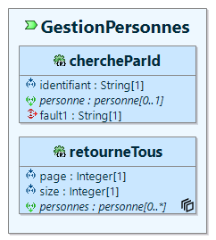
Au niveau de l'onlet "Exposition" pour le paramètre qui véhicule le numéro de page demandé, il est nécessaire de lui définir son mode de passage :

Faire de même pour le paramètre qui véhicule le nombre d'enregistrements demandés par page :
Enfin, attribuer les deux paramètres à la notion de pagination en saisissant la rubrique "Pagination" au niveau de l'onglet "Operation" :
❗ Selon la "norme" en vigueur, il est conseillé de nommer les paramètres "page" et "size". Il est possible avec la modélisation d'appeler différement les paramètres (en interne) et de laisser "page" et "size" uniquement au niveau du paramètre de passage, par exemple :
Une fois la demande de génération de la couche de service effectuée, le code est alors le suivant pour le service REST :
public ResponseEntity<List<PersonneXtoImpl>> retourneTous(
@RequestParam(name = "page", required = true) Integer page,
@RequestParam(name = "size", required = true) Integer size) {
ResponseEntity.BodyBuilder responseBuilder = ResponseEntity.status(200);
// Start of user code 1f82841b68b9a27af5cfcf572412847c
final String sortBy = "";
// End of user code
return responseBuilder.body(this.gestionPersonnes.retourneTous(page, size, sortBy).stream()
.map(o -> PersonneMapper.toXto(o)).collect(Collectors.toList()));
}
On peut remarquer la présence d'un paramètre "sortBy" qui est automatiquement ajouté et transféré au niveau de couches inférieures. Ce paramètre est initialisé entre balises de type "user code" ce qui permet au développeur de définir ses critères de tri pour la réponse (le nom de la colonne).
Le code du service métier au niveau du domaine :
@Override
public List<PersonneDtoImpl> retourneTous(final Integer page, final Integer size, String sortBy) {
// Appel des exigences en provenance de la modélisation
// Start of user code b3cd801bacaa8215ea8b99cd493f3c64
// End of user code
List<PersonneDtoImpl> personnes = this.gestionPersonnesProvider.retourneTous(page, size, sortBy);
// Start of user code fc7467f7f1fb6f5cccd57590429003e4
// End of user code
return personnes;
}
Et enfin, le code au niveau de l'implementation de la couche de persistance :
@Override
public List<PersonneDtoImpl> retourneTous(final Integer page, final Integer size, String sortBy) {
// Start of user code 1f82841b68b9a27af5cfcf572412847c
// End of user code
Page<PersonneEntityImpl> pageEntity = retourneTous_invoke(PageRequest.of(page, size, Sort.by(sortBy)));
return pageEntity.getContent().stream().map(o -> PersonneMapper.toDto(o)).collect(Collectors.toList());
}
Mise en place du "circuit-breaker"
Un "circuit-breaker" est un mécanisme qui empêche un système de continuer à appeler un service en échec, afin de limiter la propagation des erreurs et de laisser le service défaillant se rétablir.
Dans le contexte des services REST il s'agit d'un mécanisme de protection qui interrompt temporairement les appels vers un service distant lorsqu’un certain seuil d’échecs est atteint, afin d’éviter de surcharger un service instable, de préserver les ressources du client, et améliorer la résilience globale de l’architecture.
Les objectifs sont donc de :
- Limiter l’impact des pannes de services tiers ou en cascade.
- Réduire les temps de réponse côté client en évitant des appels voués à l’échec.
- Permettre la reprise progressive d’un service REST une fois rétabli.
Avec Pacman la modélisation d'un tel service s'effectue par l'ajout de services de type "Required", à la différence des services de type "Provided" utilisés jusqu'à maintenant. La modélisation n'impacte ni la couche domaine, ni la couche application au niveau de l'infrastructure, seul un "adapter" est ajouté avec pour nom [nom du service]ExternalProvider (au lieu de [nom du service]JpaProvider)

Le code généré au niveau de l'implémentation du service d'infrastructure est le suivant :
@AdapterService
public class GestionAppelsExternesExternalProviderImpl implements GestionAppelsExternesProvider {
@Override
@CircuitBreaker(name = "estUtilisateurFaceBookCircuitBreaker", fallbackMethod = "estUtilisateurFaceBookFallback")
public Boolean estUtilisateurFaceBook(final String uuid) {
// Start of user code ee90aef40f6fecc8cc4976ab9a5abe88
throw new DemoNotImplementedException("La méthode 'estUtilisateurFaceBook' n'a pas été implémentée");
// End of user code
}
/**
* Méthode de repli pour {@link #estUtilisateurFaceBook} en cas d'échec ou
* d'indisponibilité du service externe. Il est à noter que cette méthode doit
* avoir exactement les mêmes paramètres (dans le même ordre) que la méthode
* principale, seule une exception de type 'Throwable' est ajoutée en fin de
* signature.
*/
public Boolean estUtilisateurFaceBookFallback(final String uuid) {
// Start of user code a5dbdd4d474e95235c3ac793abc576e5
// Logique de repli (par exemple, retourner une réponse par défaut)
throw new DemoNotImplementedException(
"La méthode 'estUtilisateurFaceBook' de fallback n'a pas été implémentée");
// End of user code
}
}
Le paramètrage du nombre de tentatives d'appel, du délai entre chaque appel, etc.. est disponible au niveau du fichier de configuration de l'application : "application.properties".
Exemple de modélisation avancée
Voici à titre d'exemple, une modélisation pour la couche de persistance qui permet de visualiser rapidement l'ensemble des possibilités disponibles, on ne s'interesse ici qu'a l'entité principale afin principalement de montrer les différentes relations générées.

Et le code des relations associées pour l'entité principale PersonneDetailEntityImpl :
@Entity
@Table(name = "TBL_PERSONNE_DETAIL", schema = "SCH")
@SequenceGenerator(name = "PERSONNEDETAIL_SEQUENCE", sequenceName = "SCH.TBL_PERSONNE_DETAIL_SEQ", allocationSize = 1)
@SQLDelete(sql = "UPDATE SCH.TBL_PERSONNE SET xtopsup = true WHERE TBL_PERSONNE_DETAIL_ID = ?")
@SQLRestriction("xtopsup = false")
public class PersonneDetailEntityImpl extends DemoEntityAbs {
// CONSTANTES ET ATTRIBUTS
// Start of user code d7bbcbe6a7acc56177d5556a145d9bb1
// End of user code
/** Id. */
@Id
@GeneratedValue(strategy = GenerationType.SEQUENCE, generator = "PERSONNEDETAIL_SEQUENCE")
@Column(name = "TBL_PERSONNE_DETAIL_ID", nullable = false)
private Long personneDetail_id;
/** Le numéro de sécurité sociale pour la personne. */
// Start of user code 2fc90baa97ca768b902d1318a899060e
// End of user code
@Column(name = "NUMSECU", nullable = false)
private String numSecu;
/** L'âge de la personne. */
// Start of user code 7d637d275668ed6d41a9b97e6ad3a556
// End of user code
@Column(name = "AGE", nullable = true)
private Integer age;
/** Le genre de la personne. */
// Start of user code 7f80095aea4d66af1121f1fbe916066d
// End of user code
@Column(name = "GENRE", nullable = false)
private String genre;
/** La date de naissance pour la personne. */
// Start of user code 204e5968d93f74819a495317664f9a8a
// End of user code
@Column(name = "DATENAISSANCE", nullable = true, columnDefinition = "DATE")
private LocalDate dateNaissance;
/** Le nom pour la personne (hérité). */
// Start of user code aee37c30f5d091a495526f636a3527bb
// End of user code
@Column(name = "NOM", nullable = false)
private String nom;
/** Le prénom pour la personne (hérité). */
// Start of user code 209f4226d4ca0e91af3607674c06a9bc
// End of user code
@Column(name = "PRENOM", nullable = false)
private String prenom;
/** La liste des adresses pour la personne. */
// Start of user code d6d3f83da68f8d7a4af10f3792bc571a
// End of user code
@OneToMany(fetch = FetchType.EAGER, mappedBy = "personneDetail")
private List<AdresseEntityImpl> aPourAdresse;
/** La mère pour la personne. */
// Start of user code 4f8b5bff6538bc508d8cc45e8a1ec6dd
// End of user code
@ManyToOne(fetch = FetchType.EAGER)
@JoinColumn(name = "APOURMERE_ID", referencedColumnName = "TBL_PERSONNEDETAIL_ID", nullable = false)
private PersonneDetailEntityImpl aPourMere;
/** Le père pour la personne. */
// Start of user code 88bb032457e70f1191a3c6542f38fce4
// End of user code
@ManyToOne(fetch = FetchType.EAGER)
@JoinColumn(name = "APOURPERE_ID", referencedColumnName = "TBL_PERSONNEDETAIL_ID", nullable = false)
private PersonneDetailEntityImpl aPourPere;
/** La voiture principale pour la personne. */
// Start of user code 08432f639b4515c84e5338822fea6baf
// End of user code
@ManyToOne(fetch = FetchType.EAGER)
@JoinColumn(name = "TBL_VOITURE_ID", referencedColumnName = "TBL_VOITURE_ID", nullable = true)
private VoitureEntityImpl voiture;
/** La liste des frères pour la personne. */
// Start of user code d06fd39424c52878b6c1b055a2469523
// End of user code
@ManyToMany(fetch = FetchType.EAGER, targetEntity = PersonneDetailEntityImpl.class)
@JoinTable(name = "TBL_PERSONNEDETAILAPOURFRERE", schema = "SCH", joinColumns = @JoinColumn(name = "TBL_PERSONNEDETAIL_ID")
, inverseJoinColumns = @JoinColumn(name = "TBL_PERSONNEDETAIL_1_ID"))
private List<PersonneDetailEntityImpl> aPourFrere;
/** La liste des loisirs pour la personne. */
// Start of user code 373fdd8ab6e4368cee4c045b1594d983
// End of user code
@ManyToMany(fetch = FetchType.EAGER, targetEntity = LoisirEntityImpl.class)
@JoinTable(name = "TBL_PERSONNEDETAILAPOURLOISIR", schema = "SCH", joinColumns = @JoinColumn(name = "TBL_PERSONNEDETAIL_ID")
, inverseJoinColumns = @JoinColumn(name = "TBL_LOISIR_ID"))
private Set<LoisirEntityImpl> aPourLoisir;
/** La liste des soeurs pour la personne. */
// Start of user code aa719428a3d8ea0dc0813733b65145c3
// End of user code
@ManyToMany(fetch = FetchType.EAGER, targetEntity = PersonneDetailEntityImpl.class)
@JoinTable(name = "TBL_PERSONNEDETAILAPOURSOEUR", schema = "SCH", joinColumns = @JoinColumn(name = "TBL_PERSONNEDETAIL_ID")
, inverseJoinColumns = @JoinColumn(name = "TBL_PERSONNEDETAIL_1_ID"))
private List<PersonneDetailEntityImpl> aPourSoeur;
etc...
}
Au niveau du script de création pour la base de données, comme il y a une notion d'héritage qui a été modélisée (uniquement pour pouvoir renvoyer des objets personneEntityIml et personneDetailEntityImpl, une seule table est crée, la table TBL_PERSONNE_DETAIL.
/******************************************************************/
/* Base de donnees: h2 */
/* Application: demo */
/* Date de creation: 13/05/2025 10:55:16 */
/******************************************************************/
/******************************************************************/
/* Sequences */
/******************************************************************/
create sequence PERSONNE_DETAIL_SEQ start with 1;
create sequence LOISIR_SEQ start with 1;
create sequence ADRESSE_SEQ start with 1;
create sequence VOITURE_SEQ start with 1;
/******************************************************************/
/* TABLE : PERSONNE */
/******************************************************************/
create table PERSONNE_DETAIL
(
/* PK de la table PERSONNE */
PERSONNE_DETAIL_ID NUMBER(19) not null,
NUMSECU VARCHAR(100) not null,
AGE NUMBER(10),
GENRE VARCHAR(100) not null,
DATENAISSANCE TIMESTAMP,
NOM VARCHAR(100) not null,
PRENOM VARCHAR(100) not null,
XTOPSUP BOOLEAN not null DEFAULT 'false',
XDMAJ TIMESTAMP not null,
XUUID VARCHAR(36) not null,
APOURMERE_ID NUMBER(19) not null,
APOURPERE_ID NUMBER(19) not null,
VOITURE_ID NUMBER(19),
constraint PERSONNE_PK1_1 primary key (PERSONNE_ID)
);
create index PERSONNEDETAIL_IDX1_1 on PERSONNE(APOURMERE_ID);
create index PERSONNEDETAIL_IDX1_2 on PERSONNE(APOURPERE_ID);
create index PERSONNEDETAIL_IDX1_3 on PERSONNE(PERSONNE_ID);
comment on column PERSONNE.PERSONNE_ID is 'Clé primaire pour la table PERSONNE';
comment on column PERSONNE.NUMSECU is 'Le numéro de sécurité sociale pour la personne';
comment on column PERSONNE.AGE is 'L''âge de la personne';
comment on column PERSONNE.GENRE is 'Le genre de la personne';
comment on column PERSONNE.DATENAISSANCE is 'La date de naissance pour la personne';
comment on column PERSONNE.NOM is 'Le nom de la personne';
comment on column PERSONNE.PRENOM is 'Le prénom de la personne';
comment on column PERSONNE.APOURMERE_ID is 'La mère pour la personne';
comment on column PERSONNE.APOURPERE_ID is 'Le père pour la personne';
comment on column PERSONNE.VOITURE_ID is 'La personne peut avoir une voiture principale';
/******************************************************************/
/* TABLE : LOISIR */
/******************************************************************/
create table LOISIR
(
/* PK de la table LOISIR */
LOISIR_ID NUMBER(19) not null,
TYPE VARCHAR(100) not null,
XTOPSUP BOOLEAN not null DEFAULT 'false',
XDMAJ TIMESTAMP not null,
XUUID VARCHAR(36) not null,
constraint LOISIR_PK1_1 primary key (LOISIR_ID)
);
comment on table LOISIR is 'Les loisirs pratiqués par des personnes';
comment on column LOISIR.LOISIR_ID is 'Clé primaire pour la table LOISIR';
comment on column LOISIR.TYPE is 'Le type pour le loisir';
/******************************************************************/
/* TABLE : ADRESSE */
/******************************************************************/
create table ADRESSE
(
/* PK de la table ADRESSE */
ADRESSE_ID NUMBER(19) not null,
RUE VARCHAR(100) not null,
CODEPOSTAL VARCHAR(100) not null,
VILLE VARCHAR(100) not null,
XTOPSUP BOOLEAN not null DEFAULT 'false',
XDMAJ TIMESTAMP not null,
XUUID VARCHAR(36) not null,
PERSONNE_ID NUMBER(19) not null,
constraint ADRESSE_PK1_1 primary key (ADRESSE_ID)
);
create index ADRESSE_IDX1_1 on ADRESSE(PERSONNE_ID);
comment on table ADRESSE is 'La liste des adresses pour les personnes';
comment on column ADRESSE.ADRESSE_ID is 'Clé primaire pour la table ADRESSE';
comment on column ADRESSE.RUE is 'La rue pour l''adresse';
comment on column ADRESSE.CODEPOSTAL is 'Le code postal pour l''adresse';
comment on column ADRESSE.VILLE is 'La ville pour l''adresse';
comment on column ADRESSE.PERSONNE_ID is 'Une personne peut avoir de une à plusieurs adresses';
/******************************************************************/
/* TABLE : VOITURE */
/******************************************************************/
create table VOITURE
(
/* PK de la table VOITURE */
VOITURE_ID NUMBER(19) not null,
MARQUE VARCHAR(100) not null,
PUISSANCEFISCALE NUMBER(10),
XTOPSUP BOOLEAN not null DEFAULT 'false',
XDMAJ TIMESTAMP not null,
XUUID VARCHAR(36) not null,
constraint VOITURE_PK1_1 primary key (VOITURE_ID)
);
comment on table VOITURE is 'La liste des voitures principales pour les personnes';
comment on column VOITURE.VOITURE_ID is 'Clé primaire pour la table VOITURE';
comment on column VOITURE.MARQUE is 'La marque pour la voiture';
comment on column VOITURE.PUISSANCEFISCALE is 'La puissance fiscale pour la voiture';
/******************************************************************/
/* TABLE DE LIAISON : PERSONNEDETAIL_APOURFRERE */
/******************************************************************/
create table PERSONNEDETAIL_APOURFRERE
(
PERSONNE_DETAIL_ID NUMBER(19) not null,
PERSONNE_DETAIL_RECURSIVE_ID NUMBER(19) not null,
constraint PERSONNEDETAILAPOURFRERE_PK2_1 primary key (PERSONNE_ID, PERSONNE_1_ID)
);
comment on table PERSONNEDETAIL_APOURFRERE is 'La liste des frères pour la personne';
/******************************************************************/
/* TABLE DE LIAISON : PERSONNEDETAIL_APOURLOISIR */
/******************************************************************/
create table PERSONNEDETAIL_APOURLOISIR
(
PERSONNE_ID NUMBER(19) not null,
LOISIR_ID NUMBER(19) not null,
constraint PERSONNEDETAILAPOURLOISIR_PK2_1 primary key (PERSONNE_ID, LOISIR_ID)
);
comment on table PERSONNEDETAILA_POURLOISIR is 'Une personne peut partiquer de 0 à plusieurs loisirs';
/******************************************************************/
/* TABLE DE LIAISON : PERSONNEDETAIL_APOURSOEUR */
/******************************************************************/
create table PERSONNEDETAILAPOURSOEUR
(
PERSONNE_ID NUMBER(19) not null,
PERSONNE_DETAIL_RECURSIVE_ID NUMBER(19) not null,
constraint PERSONNEDETAILAPOURSOEUR_PK2_1 primary key (PERSONNE_ID, PERSONNE_1_ID)
);
comment on table PERSONNEDETAIL_APOURSOEUR is 'La liste des soeurs pour la personne';
/******************************************************************/
/* Contraintes */
/******************************************************************/
alter table PERSONNE add constraint PERSONNE_FK1_1 foreign key (APOURMERE_ID) references PERSONNE (PERSONNE_ID);
alter table PERSONNE add constraint PERSONNE_FK1_2 foreign key (APOURPERE_ID) references PERSONNE (PERSONNE_ID);
alter table PERSONNE add constraint PERSONNE_FK1_3 foreign key (PERSONNE_ID) references PERSONNE (PERSONNE_ID);
alter table ADRESSE add constraint ADRESSE_FK1_1 foreign key (PERSONNE_ID) references PERSONNE (PERSONNE_ID);
alter table PERSONNEDETAIL_APOURFRERE add constraint PERSONNEDETAILAPOURFRERE_FK1_1 foreign key (PERSONNE_ID) references PERSONNE (PERSONNE_ID);
alter table PERSONNEDETAIL_APOURFRERE add constraint PERSONNEDETAILAPOURFRERE_FK1_2 foreign key (PERSONNE_ID) references PERSONNE (PERSONNE_ID);
alter table PERSONNEDETAIL_APOURLOISIR add constraint PERSONNEDETAILAPOURLOISIR_FK1_1 foreign key (PERSONNE_ID) references PERSONNE (PERSONNE_ID);
alter table PERSONNEDETAIL_APOURLOISIR add constraint PERSONNEDETAILAPOURLOISIR_FK1_2 foreign key (LOISIR_ID) references LOISIR (LOISIR_ID);
alter table PERSONNEDETAIL_APOURSOEUR add constraint PERSONNEDETAILAPOURSOEUR_FK1_1 foreign key (PERSONNE_ID) references PERSONNE (PERSONNE_ID);
alter table PERSONNEDETAIL_APOURSOEUR add constraint PERSONNEDETAILAPOURSOEUR_FK1_2 foreign key (PERSONNE_ID) references PERSONNE (PERSONNE_ID);
Au niveau de la couche domaine avec les objets métier on retouve le DTO, comme plusieurs champs ont été marqués comme obligatoires, la méthode de validation est la suivante :
public PersonneDetailDtoImpl validate() throws DemoValidationException {
List<String> errors = new ArrayList<>();
ValidatorUtils.checkMandatory("numSecu", numSecu, errors);
ValidatorUtils.checkMandatory("genre", genre, errors);
ValidatorUtils.checkMandatory("nom", nom, errors);
ValidatorUtils.checkMandatory("prenom", prenom, errors);
if (!errors.isEmpty()) {
throw new DemoValidationException(this, errors.toArray(new String[errors.size()]));
}
return this;
}
Enfin les méthodes "equals(), hashcode() et toString()" ont été redéfinies, ici par exemple le code de la méthode "equals()" :
@Override
public boolean equals(Object obj) {
if (this == obj) {
return true;
}
if (!(obj instanceof PersonneDetailDtoImpl)) {
return false;
}
PersonneDetailDtoImpl personneDetail = (PersonneDetailDtoImpl) obj;
return Objects.equals(this.personneDetail_id, personneDetail_id)
&& Objects.equals(this.numSecu, personneDetail.numSecu)
&& Objects.equals(this.age, personneDetail.age)
&& Objects.equals(this.genre, personneDetail.genre)
&& Objects.equals(this.dateNaissance, personneDetail.dateNaissance)
&& Objects.equals(this.nom, personneDetail.nom)
&& Objects.equals(this.prenom, personneDetail.prenom)
&& Objects.equals(this.xtopsup, personneDetail.xtopsup)
&& Objects.equals(this.xdmaj, personneDetail.xdmaj)
&& Objects.equals(this.xuuid, personneDetail.xuuid);
}
✔️ Validation de la modélisation
Bien que vu précédemment, un chapitre est toutefois consacré exclusivement à ce "générateur". Comme précité, la validation de la modélisation est automatiquement lancée avant chaque demande de génération pour la couche de persistance, la couche de service ou encore la création des scripts SQL.
- Si aucune erreur n'est détectée, le générateur est alors activé et la génération est effectuée.
- En cas d'erreur, une fenêtre est affichée et la poursuite de la génération est stoppée (ne pas tenir compte du "java.lang.reflect.invocationTargetException").

- Il est alors possible de visualiser le rapport au niveau du projet de modélisation en ouvrant le fichier [nom de l'application]-validation.log. Ce fichier permet de cibler l'objet en cause, d'afficher la ou les erreur(s) rencontrée(s) et de proposer une solution pour le contournement de chaque erreur.
--------------------------------------------------------------------------------------------------------------------------------------------------- objet | erreur rencontrée | solution potentielle | --------------------------------------------------------------------------------------------------------------------------------------------------- referentiel.GestionPersonnes.chercheParId() | Opération sans statut de retour | Attachez un code statut au paramètre de retour pour une opération| referentiel.GestionPersonnes.retourneTous() | Opération sans statut de retour | Attachez un code statut au paramètre de retour pour une opération|
- Il est aussi possible de lancer directement la vérification du modèle qui se soldera obligatoirement par l'affichage d'une fenêtre indiquant soit la présence d'erreur(s) de modélisation, soit la bonne prise en compte du modèle.
üì¶ D√©ploiement de l'application
Ce paragraphe sera complété prochainement.
❓ Problèmes Courants et Résolution
• Quand je relance une génération j'ai des erreurs au niveau de mes classes à cause de données manquantes dans les imports : ceci est une problématique liée plus précisément à des modifications de modélisation suite à générations antérieures.
Pacman, afin de conserver les imports non générés (ceux spécifiquement (et éventuellement) rajoutés par les développeurs) est obligé de générer les imports entre balise de type "user code". Ainsi, lors des futures demandes de génération, les imports utilisateurs ne sont pas écrasés.
La problématique est que, en conséquence, il devient impossible au générateur de créer de nouveaux imports si besoin. Bien souvent ces imports concernent des listes ou des sets, d'ou le message envoyé par l'IDE indiquant qu'il ne sait pas les résoudre et que cela nécessite une intervention utilisateur.
Il n'est par ailleurs pas possible au niveau des imports de créer une section libre pour la génération et une section "user code" pour les imports spécifiques utilisateurs car l'organisation automatique ne fonctionne pas si les balises sont positionnées différement.
L'unique solution pour l'instant consiste donc à lancer une organisation automatique des imports manuellement sur les différentes classes en erreur et effectuer les choix nécessaires. Lors de la prochaine demande de génération, les imports étant reconstitués, les classes ne devraient plus être en erreur.
• Suite à demande de génération, mes classes ont des warnings : en ouvrant une classe, je vois que de nombreux imports ne sont pas utilisés. Pourtant, au niveau de mon fichier "project.properties" je ne suis pas en mode debug.
Il peut arriver que, suite à une demande de génération (pour une raison encore non expliquée), les tâches de fin de traitement ne soient pas lancées. L'organisation automatique des imports n'est alors pas activée et comme Pacman dans sa politique de gestion des imports génère plus d'imports que nécessaires, ceux-ci ne sont alors pas supprimés. Il suffit simplement de relancer une génération pour résoudre le problème.
üìé Annexes
• Liste des métadonnées disponibles (certaines métadonnées sont présentes mais ne sont pas encore actives, ou seront probablement supprimées suite à études. Par ailleurs, certaines métadonnées ne concernent pas le framework Spring Boot (ne pas oublier que Pacman est un générateur multi-frameworks et que dans un avenir proche, le framework Spi4j sera aussi inclu).
Ces m√©tadonn√©es sont pour l'instant toujours list√©es mais avec une ic√¥ne üö´.
| Métadonnée | Corps | Description | S'applique sur |
|---|---|---|---|
| PHYSICAL_NAME | OUI | Nom pour la table | ENTITY |
| PHYSICAL_SHORT_NAME | OUI | Nom (longues tables) | ENTITY, REFERENCE |
| PHYSICAL_DEFAULT | OUI | Valeur par défaut | ENTITY |
| PHYSICAL_CHECK | OUI | Contrainte de vérification pour insertion ou modification | ENTITY |
| PHYSICAL_UNIQUE | OUI | Contrainte d'unicité pour la colonne | ATTRIBUTE |
| PHYSICAL_SIZE | OUI | Taille de l'attribut | ATTRIBUTE |
| VERSION | OUI | Version de l'entité (implique la gestion automatique du Lock Optimiste) | SYSTEM, CATEGORY, DTO |
| REFERENTIALüö´ | |||
| COMPUTED | NON | Champ calculé par le développeur | ATTRIBUTE |
| USERüö´ | |||
| PERMISSIONS | OUI | Opération à exécuter selon permission(s) | OPERATION |
| PERMISSIONS_OR | OUI | Opération à exécuter selon permission(s) | OPERATION |
| PERMISSIONS_AND | OUI | Opération à exécuter selon permission(s) | OPERATION |
| VOL_NB_ROWSüö´ | OUI | Nombre d'entit√©s √† cr√©er | ENTITY |
| VOL_MIN_OCCURSüö´ | OUI | Nombre minimum d'√©l√©ments pour la relation | REFERENCE |
| VOL_MAX_OCCURSüö´ | OUI | Nombre maximum d'√©l√©ments pour la relation | REFERENCE |
| ACCEPT_UNAUTHENTIFIEDüö´ | NON | Op√©ration qui accepte un utilisateur non authentifi√© | |
| PAGE_SIZEüö´ | OUI | Nombre d'√©l√©ments √† retourner par page | OPERATION |
| AUTH_TOKEN | OUI | Récupération d'un jeton d'authentification | OPERATION |
| API_VERSION | NON | COMPONENT | |
| LIBRARY_NAME | OUI | Nom exact de la librairie | DTO |
| LITERAL_PARAM_VALUE | OUI | Définition d'une énumération complexe | LITERAL |
| LITERALS_PARAMS_STRUCT | OUI | Définition d'une énumération complexe | ENUMERATION |
| CASCADE_TYPE | OUI | Gestion des relations entre dépendances | REFERENCE |
| FETCH_LAZY | NON | Demande de chargement paresseux | REFERENCE |
| ENTITY_MANAGER | NON | Demande d'utilisation de l'entity manager | ENTITY |
• Liste des règles de validation dans les différents diagrammes.
| Règle | S'applique sur |
|---|---|
| Pas d'entité vide (sans attribut) | ENTITY/DTO |
| Pas d'attribut avec 'identifier' de coché | ENTITY |
| Pas d'attribut avec une cardinalité multiple | ENTITY |
| Pas d'attribut sans nom défini | ENTITY/DTO |
| Pas d'attribut sans type défini | ENTITY/DTO |
| Pas de relations récursives avec le même nom | ENTITY/DTO |
| Pas de relation de type 'composite' | ENTITY/DTO |
| Pas de relation entre sous-entités et super-entités | ENTITY/DTO |
| Pas de relations entre super-entités | ENTITY/DTO |
| Pas de relation bidirectionnelle avec double navigabilité | ENTITY/DTO |
| Pas de relation bidirectionnelle avec (1) ou (0,1) | ENTITY/DTO |
| Pas de service avec des entités (uniquement dto) | SOA |
| Pas de service sans paramètre de retour | SOA |
| Pas de service sans code de retour | SOA |
| Pas de service non REST | SOA |
| Pas de pagination sur une opération qui ne retourne pas de liste | SOA |
| Pas de pagination avec des paramètres de pagination non 'Integer' | SOA |
| Pas de 'fault' sans code de retour | SOA |
| Pas de service avec '/' à la fin du point de terminaison | SOA |
| Pas de service avec plusieurs paramètres passés dans le corps (body) | SOA |
| Pas de service avec plusieurs paramètres de sortie | SOA |
| Pas de service avec des dtos passés hors body (path ou query) | SOA |
| Pas de service avec des types binaires passés dans le path | SOA |
| Pas de service avec TRACE (désactivé pour raisons de sécurité) | SOA |
| Pas de service OPTION avec des paramètres en entrée | SOA |
| Pas de service HEAD avec un paramètre en sortie. | SOA |
| Pas de multiples 'components' comme conteneur de services | SOA |
| Pas de multiples sécurités définies au niveau du 'component' | SOA |